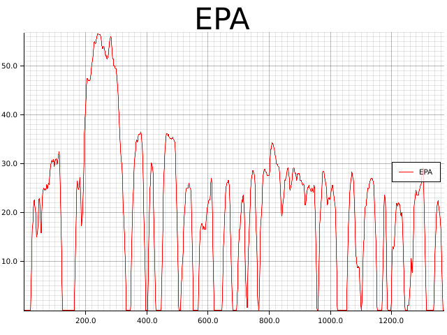

BPIN: 2017000100062 "DESARROLLO EXPERIMENTAL DE UN PROTOTIPO DE VEHÍCULO ELÉCTRICO EN EL SECTOR AUTOMOTRIZ DEL VALLE DEL CAUCA"
EL DESARROLLO DE UNIDAD CENTRAL DE CONTROL VCU, PARA EL CONTROL DE OPERACIÓN DEL VEHICULO INTEGRANDO LA OPERACIÓN DEL SEGUNDO MOTOR EN LA TRACCION TRASERA de un vehículo eléctrico en el sector automotriz del Valle del Cauca tipo SUV,
https://univallevehiculoelectrico.com/
https://univallevehiculoelectrico.com/aliados-estrategicos/
https://univallevehiculoelectrico.com/sobre-nosotros/
https://www.kandiamerica.com/electric-vehicle-K27/
Objetivos
Objetivo General
Habilitar el funcionamiento de un segundo eje de tracción
Objetivos Específicos
- Control de torque refinado a las llantas traseras según condiciones de seguridad y de conducción
- Diagnosticar funcionamiento del vehículo y optimización del uso del eje trasero
- Interfaz de control manual y automática de la funcionalidad
Cronograma
@startuml
@startgantt
scale 4
Project starts the 2021/04/19
[Estado del vehículo pasivo] is colored in Lavender/LightBlue and lasts 16 days
[Posición de mandos] starts at [Estado del vehículo pasivo]'s end and lasts 16 days
[Entrega 1: Mayo 20] happens at [Posición de mandos]'s end
[Estado del vehículo dinámico] lasts 11 days and is colored in Coral/Green and starts at [Posición de mandos]'s end
[Lógica de control] starts at [Estado del vehículo dinámico]'s end and lasts 8 days
[Hardware] starts at [Lógica de control]'s end and lasts 9 days
[Entrega 2: Junio 17] happens at [Hardware]'s end
[Software] is colored in Coral/Green and starts at [Hardware]'s end and lasts 11 days
[Herramienta de desarrollo] starts at [Software]'s end and lasts 10 days
[Entrega 3: Julio 8] happens at [Herramienta de desarrollo]'s end
[Pruebas puntuales] starts at [Herramienta de desarrollo]'s end and lasts 21 days
[Pruebas vehiculares] starts at [Pruebas puntuales]'s end and lasts 21 days
[Entrega 4: Agosto 19] happens at [Pruebas vehiculares]'s end
[Informe final] starts at [Pruebas vehiculares]'s end and lasts 21 days
[Entrega 5: Septiembre 9] happens at [Informe final]'s end
@endgantt
@enduml
Fase 1: Estado del vehículo pasivo
- Encendido /Apagado
- Parqueo
- Puertas
- Estado de carga
- Estado de marcha
- Inclinación
- Presión de buster de freno
- Equipo auxiliarles
- Estados
- Consumos (AC, Ventiladores, ECU, bomba enfriamiento, dirección, iluminación,lubricación
- Presión de frenos
- Status del ABS
- Temperatura del motor
- Temperatura del controlador
- Temperatura baterías
- Estatus BMS
- Voltajes celdas
- dV/dT
- corriente de balanceo
- Otros
Fase 1.1
Fase 2: Posición de mandos
- Acelerador
- Freno de pedal
- Freno de mano
- Encoder de dirección
- Puertas
- Sensor de cinturón
- Palanca de cambios
- Encendido
- Sensores de airbags
- Sensores de cargador
- otro
Fase 3: Estado del vehículo dinámico
- Estado del controlador
- Comando de aceleración
- Voltaje
- Corriente al motor (delantero)
- RPM motor (delantero)
- Temperatura motor (delantero)
- Temperatura Motor Baterías
- Presión de frenos
- Status ABS
- RPM llanta (velocidad) del vehículo)
- Auxiliares status
- Auxiliares consumos
- otro
Fase 4: Lógica de control
- Ingeniería inversa de lógica actual
- DPS de escenarios
- Matriz de estados
- Lista fina del de implementación
- Diseño de lógica nueva
- Optimizar para dos motores independientes traseros
Fase 5: Hardware
- Definición de compacidades o I/O análogo
- I/O digitas
- Salidas
- Status /reboot función
- Alimentación
- Verificación de funcionalidad
- Análisis de confiabilidad
- Conectividad
- Black box
- otros
Fase 6: Software
- Compilación
- Estabilidad
- Control de versiones
- otros
Fase 7: Herramienta de desarrollo
- conectividad al vehículo • UI
- Graficas y tableros (por diseñar en conjunto con pruebas)
- otros
Fase 8: Pruebas puntuales tipo “bench unit test”
- Plan de ensayos
- “Hardware in the loop testing”
- Reportes
- 0tros
Fase 9: Pruebas vehiculares
- Plan de pruebas en vehículo
- Estáticas
- Dinámicas
- Reporte final
Fase 10: Informe final
- Plan de pruebas en vehículo
- Estáticas
- Dinámicas
- Reporte final
Normatividad
¿Qué leyes a nivel nacional o local aplica al proyecto?
¿Qué permisos hay que solicitar?
Modelos
Ecuación
Masa Puntual
PID
\[ \int x dx = \frac{x^2}{2} + C \]
\[ \mu = \frac{1}{N} \sum_{i=0} x_i \]
Datos
Fisico (No Lineal)
VehicleNonlinearEquationsofMotion
https://users.ece.cmu.edu/~koopman/ahs/ahs_objectives/AHS8.pdf
Vehicle DynamicsCompendium
https://core.ac.uk/download/pdf/128709302.pdf
31Chapter 4Vehicle Dynamics
https://vtechworks.lib.vt.edu/bitstream/handle/10919/30598/CHAP3_DOC.pdf?sequence=4
3D
Pruebas del Modelo

Validación del Modelo
Subcomponentes
Se puede validar cada subcomponente
Prototipo
Estatico
Dinamico (Road Test)
Escenarios para detectar y manejar
Linea Recta Subiendo
Caso especial plano
Linea Recta Descendiendo
Curva
Curva y Frenado
Curva y Acceleración
Curva y Acceleración
Parada de Emergencia
Choque Frontal
Choque Trasera
Choque Lateral
Una Llanta frontal patinando
Ambas Llantas frontales patinando
Una Llanta trasera patinando
Ambas Llantas traseras patinando
OBDII
https://docs.openvehicles.com/en/latest/userguide/ecu.html
During operation, an OBDII device, for example, a Head-Up Display (HUD) or OBDII Diagnostic module, will make periodic requests, usually a few times per second, for a set of parameters. The OVMSv3 module will reply to those parameters with the metric if configured to do so, on an individual basis. These parameters can be common items such as vehicle speed, engine RPM, and engine coolant temperature, but because of the differences between ICE and EV vehicles, many of the parameters do not have equivalent values in an EV. Speed and engine (motor) RPM can be directly mapped, but there is typically no “engine coolant”. That parameter (in fact, most parameters) can be mapped to some other value of interest.
https://www.csselectronics.com/screen/product/obd2-dbc-file/language/en
Definicion en formato DBC
https://canlogger1000.csselectronics.com/files/guides/mdf-intro/OBD2-DBC-MDF4.zip
EV
| PID (Dec) | PID (Hex) | Requested Parameter | Mapped Metric Value | Metric Name |
|---|---|---|---|---|
| 4 | 0x04 | Engine Load | Battery SOC | v.b.soc |
| 5 | 0x05 | Coolant Temp | Motor Temp | v.m.temp |
| 12 | 0x0c | Motor RPM | Motor RPM | v.m.rpm |
| 13 | 0x0d | Vehicle Speed | Vehicle Speed | v.p.speed |
| 16 | 0x10 | MAF Air Flow | 12v Battery | v.b.12v.voltage |
PID 0x5B HYBRID_BATT_PCT
#define PID_0_20 0x00 //PID 0 - 20 supported
#define PID_0_20_DESC "PID 0x00 - 0x20 Supported"
#define STATUS_DTC 0x01 ///
#define STATUS_DTC_DESC "Status since DTC Cleared"
#define FREEZE_DTC 0x02 ///
#define FREEZE_DTC_DESC "Freeze Diagnostic Trouble Code"
#define FUEL_SYS_STATUS 0x03 ///
#define FUEL_SYS_STATUS_DESC "Fuel System Status"
#define ENGINE_LOAD 0x04 //
#define ENGINE_LOAD_DESC "Calculated Engine Load"
#define ENGINE_COOLANT_TEMP 0x05
#define ENGINE_COOLANT_TEMP_DESC "Engine Coolant Temperature"
#define ST_FUEL_TRIM_1 0x06 ///
#define ST_FUEL_TRIM_1_DESC "Short Term Fuel % Trim - Bank 1"
#define LT_FUEL_TRIM_1 0x07 ///
#define LT_FUEL_TRIM_1_DESC "Long Term Fuel % Trim - Bank 1"
#define ST_FUEL_TRIM_2 0x08 ///
#define ST_FUEL_TRIM_2_DESC "Short Term Fuel % Trim - Bank 2"
#define LT_FUEL_TRIM_2 0x09 ///
#define LT_FUEL_TRIM_2_DESC "Long Term Fuel % Trim - Bank 2"
#define FUEL_PRESSURE 0x0A //
#define FUEL_PRESSURE_DESC "Fuel Pressure"
#define INTAKE_PRESSURE 0x0B //
#define INTAKE_PRESSURE_DESC "Intake Manifold Absolute Pressure"
#define ENGINE_RPM 0x0C
#define ENGINE_RPM_DESC "Engine RPM"
#define VEHICLE_SPEED 0x0D
#define VEHICLE_SPEED_DESC "Vehicle Speed"
#define TIMING_ADVANCE 0x0E //
#define TIMING_ADVANCE_DESC "Timing Advance"
#define INTAKE_TEMP 0x0F //
#define INTAKE_TEMP_DESC "Intake Air Temperature"
#define MAF_SENSOR 0x10
#define MAF_SENSOR_DESC "MAF Sensor Air Flow Rate"
#define THROTTLE 0x11
#define THROTTLE_DESC "Throttle Position"
#define COMMANDED_SEC_AIR 0x12 ///
#define COMMANDED_SEC_AIR_DESC "Commanded Secondary Air Status"
#define O2_SENS_PRES 0x13 ///
#define O2_SENS_PRES_DESC "Detected O2 Sensors"
#define O2_B1S1_VOLTAGE 0x14 ///
#define O2_B1S1_VOLTAGE_DESC "O2 Sensor Voltage - Bank 1 Sensor 1"
#define O2_B1S2_VOLTAGE 0x15 ///
#define O2_B1S2_VOLTAGE_DESC "O2 Sensor Voltage - Bank 1 Sensor 2"
#define O2_B1S3_VOLTAGE 0x16 ///
#define O2_B1S3_VOLTAGE_DESC "O2 Sensor Voltage - Bank 1 Sensor 3"
#define O2_B1S4_VOLTAGE 0x17 ///
#define O2_B1S4_VOLTAGE_DESC "O2 Sensor Voltage - Bank 1 Sensor 4"
#define O2_B2S1_VOLTAGE 0x18 ///
#define O2_B2S1_VOLTAGE_DESC "O2 Sensor Voltage - Bank 2 Sensor 1"
#define O2_B2S2_VOLTAGE 0x19 ///
#define O2_B2S2_VOLTAGE_DESC "O2 Sensor Voltage - Bank 2 Sensor 2"
#define O2_B2S3_VOLTAGE 0x1A ///
#define O2_B2S3_VOLTAGE_DESC "O2 Sensor Voltage - Bank 2 Sensor 3"
#define O2_B2S4_VOLTAGE 0x1B ///
#define O2_B2S4_VOLTAGE_DESC "O2 Sensor Voltage - Bank 2 Sensor 4"
#define OBDII_STANDARDS 0x1C //List of OBDII Standars the car conforms to
#define OBDII_STANDARDS_DESC "Supported OBDII Standards"
#define O2_SENS_PRES_ALT 0x1D ///
#define O2_SENS_PRES_ALT_DESC "Detected O2 Sensors - Alternate Grouping"
#define AUX_IN_STATUS 0x1E ///
#define AUX_IN_STATUS_DESC "Auxiliary Input Status"
#define ENGINE_RUNTIME 0x1F //
#define ENGINE_RUNTIME_DESC "Run Time Since Engine Started"
#define PID_21_40 0x20 //PID 21-40 supported
#define PID_21_40_DESC "PID 0x21 - 0x40 Supported"
#define DIST_TRAVELED_MIL 0x21 ///
#define DIST_TRAVELED_MIL_DESC "Distance Traveled with MIL On"
#define FUEL_RAIL_PRESSURE 0x22 //
#define FUEL_RAIL_PRESSURE_DESC "Fuel Rail Pressure Relative to Manifold"
#define FUEL_RAIL_PRES_ALT 0x23 ///
#define FUEL_RAIL_PRES_ALT_DESC "MPI/Diesel Fuel Rail Pressure"
#define O2S1_WR_LAMBDA_V 0x24 ///
#define O2S1_WR_LAMBDA_V_DESC "O2 Sensor 1 Equivalence Ratio Voltage"
#define O2S2_WR_LAMBDA_V 0x25 ///
#define O2S2_WR_LAMBDA_V_DESC "O2 Sensor 2 Equivalence Ratio Voltage"
#define O2S3_WR_LAMBDA_V 0x26 ///
#define O2S3_WR_LAMBDA_V_DESC "O2 Sensor 3 Equivalence Ratio Voltage"
#define O2S4_WR_LAMBDA_V 0x27 ///
#define O2S4_WR_LAMBDA_V_DESC "O2 Sensor 4 Equivalence Ratio Voltage"
#define O2S5_WR_LAMBDA_V 0x28 ///
#define O2S5_WR_LAMBDA_V_DESC "O2 Sensor 5 Equivalence Ratio Voltage"
#define O2S6_WR_LAMBDA_V 0x29 ///
#define O2S6_WR_LAMBDA_V_DESC "O2 Sensor 6 Equivalence Ratio Voltage"
#define O2S7_WR_LAMBDA_V 0x2A ///
#define O2S7_WR_LAMBDA_V_DESC "O2 Sensor 7 Equivalence Ratio Voltage"
#define O2S8_WR_LAMBDA_V 0x2B ///
#define O2S8_WR_LAMBDA_V_DESC "O2 Sensor 8 Equivalence Ratio Voltage"
#define COMMANDED_EGR 0x2C //
#define COMMANDED_EGR_DESC "Commanded EGR"
#define EGR_ERROR 0x2D //
#define EGR_ERROR_DESC "EGR Error"
#define COMMANDED_EVAP_P 0x2E ///
#define COMMANDED_EVAP_P_DESC "Commanded Evaporative Purge"
#define FUEL_LEVEL 0x2F //
#define FUEL_LEVEL_DESC "Fuel Level Input"
#define WARMUPS_SINCE_CLR 0x30 ///
#define WARMUPS_SINCE_CLR_DESC "Number of Warmups since DTC Cleared"
#define DIST_SINCE_CLR 0x31 ///
#define DIST_SINCE_CLR_DESC "Distance Traveled Since DTC Cleared"
#define EVAP_PRESSURE 0x32 //
#define EVAP_PRESSURE_DESC "Evap. System Vapor Pressure"
#define BAROMETRIC_PRESSURE 0x33 //
#define BAROMETRIC_PRESSURE_DESC "Barometric Pressure"
#define O2S1_WR_LAMBDA_I 0x34 ///
#define O2S1_WR_LAMBDA_I_DESC "O2 Sensor 1 Equivalence Ratio Current"
#define O2S2_WR_LAMBDA_I 0x35 ///
#define O2S2_WR_LAMBDA_I_DESC "O2 Sensor 2 Equivalence Ratio Current"
#define O2S3_WR_LAMBDA_I 0x36 ///
#define O2S3_WR_LAMBDA_I_DESC "O2 Sensor 3 Equivalence Ratio Current"
#define O2S4_WR_LAMBDA_I 0x37 ///
#define O2S4_WR_LAMBDA_I_DESC "O2 Sensor 4 Equivalence Ratio Current"
#define O2S5_WR_LAMBDA_I 0x38 ///
#define O2S5_WR_LAMBDA_I_DESC "O2 Sensor 5 Equivalence Ratio Current"
#define O2S6_WR_LAMBDA_I 0x39 ///
#define O2S6_WR_LAMBDA_I_DESC "O2 Sensor 6 Equivalence Ratio Current"
#define O2S7_WR_LAMBDA_I 0x3A ///
#define O2S7_WR_LAMBDA_I_DESC "O2 Sensor 7 Equivalence Ratio Current"
#define O2S8_WR_LAMBDA_I 0x3B ///
#define O2S8_WR_LAMBDA_I_DESC "O2 Sensor 8 Equivalence Ratio Current"
#define CAT_TEMP_B1S1 0x3C ///
#define CAT_TEMP_B1S1_DESC "Catalyst Temperature Bank 1 Sensor 1"
#define CAT_TEMP_B1S2 0x3E ///
#define CAT_TEMP_B1S2_DESC "Catalyst Temperature Bank 1 Sensor 2"
#define CAT_TEMP_B2S1 0x3D ///
#define CAT_TEMP_B2S1_DESC "Catalyst Temperature Bank 2 Sensor 1"
#define CAT_TEMP_B2S2 0x3F ///
#define CAT_TEMP_B2S2_DESC "Catalyst Temperature Bank 2 Sensor 2"
#define PID_41_60 0x40 //PID 41-60 supported
#define PID_41_60_DESC "PID 0x41 - 0x60 Supported"
#define MONITOR_STATUS 0x41 ///
#define MONITOR_STATUS_DESC "Monitor Status This Drive Cycle"
#define ECU_VOLTAGE 0x42 //
#define ECU_VOLTAGE_DESC "Control Module Voltage"
#define ABSOLUTE_LOAD 0x43 //
#define ABSOLUTE_LOAD_DESC "Absolute Load Value"
#define COMMANDED_EQUIV_R 0x44 ///
#define COMMANDED_EQUIV_R_DESC "Commanded Equivalence Ratio"
#define REL_THROTTLE_POS 0x45 ///
#define REL_THROTTLE_POS_DESC "Relative Throttle Position"
#define AMB_AIR_TEMP 0x46 ///
#define AMB_AIR_TEMP_DESC "Ambient Air Temperature"
#define ABS_THROTTLE_POS_B 0x47 ///
#define ABS_THROTTLE_POS_B_DESC "Absolute Throttle Position B"
#define ABS_THROTTLE_POS_C 0x48 ///
#define ABS_THROTTLE_POS_C_DESC "Absolute Throttle Position C"
#define ACCEL_POS_D 0x49 ///
#define ACCEL_POS_D_DESC "Accelerator Pedal Position D"
#define ACCEL_POS_E 0x4A ///
#define ACCEL_POS_E_DESC "Accelerator Pedal Position E"
#define ACCEL_POS_F 0x4B ///
#define ACCEL_POS_F_DESC "Accelerator Pedal Position F"
#define COMMANDED_THROTTLE 0x4C ///
#define COMMANDED_THROTTLE_DESC "Commanded Throttle Actuator"
#define TIME_RUN_WITH_MIL 0x4D ///
#define TIME_RUN_WITH_MIL_DESC "Time Run with MIL on"
#define TIME_SINCE_CLR 0x4E ///
#define TIME_SINCE_CLR_DESC "Time Since DTC Cleared"
#define MAX_R_O2_VI_PRES 0x4F ///
#define MAX_R_O2_VI_PRES_DESC "Maximum Value - Equivalence ratio, O2 Voltage, O2 Current, Intake Manifold Pressure"
#define MAX_AIRFLOW_MAF 0x50 ///
#define MAX_AIRFLOW_MAF_DESC "Maximum MAF Airflow Value"
#define FUEL_TYPE 0x51 //
#define FUEL_TYPE_DESC "Fuel Type"
#define ETHANOL_PERCENT 0x52 //
#define ETHANOL_PERCENT_DESC "Ethanol fuel %"
#define ABS_EVAP_SYS_PRES 0x53 ///
#define ABS_EVAP_SYS_PRES_DESC "absolute Evap. System Vapor Pressure"
#define EVAP_SYS_PRES 0x54 ///
#define EVAP_SYS_PRES_DESC "Evap. System Vapor Pressure"
#define ST_O2_TRIM_B1B3 0x55 ///
#define ST_O2_TRIM_B1B3_DESC "Short Term Secondary O2 Sensor Trim - Bank 1 and 3"
#define LT_O2_TRIM_B1B3 0x56 ///
#define LT_O2_TRIM_B1B3_DESC "Long Term Secondary O2 Sensor Trim - Bank 1 and 3"
#define ST_02_TRIM_B2B4 0x57 ///
#define ST_O2_TRIM_B2B4_DESC "Short Term Secondary O2 Sensor Trim - Bank 2 and 4"
#define LT_O2_TRIM_B2B4 0x58 ///
#define LT_O2_TRIM_B2B4_DESC "Long Term Secondary O2 Sensor Trim - Bank 2 and 4"
#define ABS_FUEL_RAIL_PRES 0x59 ///
#define ABS_FUEL_RAIL_PRES_DESC "Absolute Fuel Rail Pressure"
#define REL_ACCEL_POS 0x5A ///
#define REL_ACCEL_POS_DESC "Relative Accelerator Pedal Position"
#define HYBRID_BATT_PCT 0x5B ///
#define HYBRID_BATT_PCT_DESC "Hybrid Battery Pack Charge Percent"
#define ENGINE_OIL_TEMP 0x5C ///
#define ENGINE_OIL_TEMP_DESC "Engine Oil Temperature"
#define FUEL_TIMING 0x5D //
#define FUEL_TIMING_DESC "Fuel Injection Timing"
#define FUEL_RATE 0x5E //
#define FUEL_RATE_DESC "Engine Fuel Rate"
#define EMISSIONS_STANDARD 0x5F ///
#define EMISSIONS_STANDARD_DESC "Emmissions Requirements"
#define DEMANDED_TORQUE 0x61 ///
#define DEMANDED_TORQUE_DESC "Driver's Demanded Torque - Percent"
#define ACTUAL_TORQUE 0x62 ///
#define ACTUAL_TORQUE_DESC "Actual Engine Torque - Percent"
#define REFERENCE_TORQUE 0x63 //
#define REFERENCE_TORQUE_DESC "Engine Reference Torque"
#define ENGINE_PCT_TORQUE 0x64 ///
#define ENGINE_PCT_TORQUE_DESC "Engine Percent Torque"
#define AUX_IO_SUPPORTED 0x65 ///
#define AUX_IO_SUPPORTED_DESC "Auxiliary Input/Output Supported"
#define P_MAF_SENSOR 0x66 ///
#define P_ENGINE_COOLANT_T 0x67 ///
#define P_INTAKE_TEMP 0x68 ///
#define P_COMMANDED_EGR 0x69 ///
#define P_COMMANDED_INTAKE 0x6A ///
#define P_EGR_TEMP 0x6B ///
#define P_COMMANDED_THROT 0x6C ///
#define P_FUEL_PRESSURE 0x6D ///
#define P_FUEL_INJ_PRES 0x6E ///
#define P_TURBO_PRESSURE 0x6F ///
#define P_BOOST_PRES_CONT 0x70 ///
#define P_VGT_CONTROL 0x71 ///
#define P_WASTEGATE_CONT 0x72 ///
#define P_EXHAUST_PRESSURE 0x73 ///
#define P_TURBO_RPM 0x74 ///
#define P_TURBO_TEMP1 0x75 ///
#define P_TURBO_TEMP2 0x76 ///
#define P_CACT 0x77 ///
#define P_EGT_B1 0x78 ///
#define P_EGT_B2 0x79 ///
#define P_DPF1 0x7A ///
#define P_DPF2 0x7B ///
#define P_DPF_TEMP 0x7C ///
#define P_NOX_NTE_STATUS 0x7D ///
#define P_PM_NTE_STATUS 0x7E ///
#define P_ENGINE_RUNTUME 0x7F ///
#define P_ENGINE_AECD_1 0x81 ///
#define P_ENGINE_AECD_2 0x82 ///
#define P_NOX_SENSOR 0x83 ///
#define P_MANIFOLD_TEMP 0x84 ///
#define P_NOX_SYSTEM 0x85 ///
#define P_PM_SENSOR 0x86 ///
#define P_IN_MANIF_TEMP 0x87 ///
#define PID_REQUEST 0x7DF
#define PID_REPLY 0x7E8
j1939
"The SAE J1939 communications network is developed for use in heavy-duty environments and suitable for horizontally integrated vehicle in-dustries. The SAE J1939 communications network is applicable for light-duty, medium-duty, and heavy- duty vehicles used on-road or off-road, and for appropriate stationary applications which use vehicle de-rived components (e.g., generator sets)."
Fuente http://www.microcontrol.net/download/manual/hb_j1939_v3r00_en.pdf
DBC
DBC Definition de J1939 500 Euros
0 Torque/Speed Control 1
256 Transmission Control 1
512 Electronic Brake System #1/1
768 Electronic Brake System #2/1
1024 External Brake Request
1280 CANopen Application Message #1/1
1536 CANopen Application Message #2/1
1792 General Purpose Valve Pressure
2048 Auxiliary Input/Output Status 5
2304 Static Roll Angle Sensor Information
2560 Cruise Control / Vehicle Speed 2
2816 Advanced Emergency Braking System 2
3072 Electronic Engine Controller 16
3328 Transmission Control 2
3584 Safety Header Message
6912 High Voltage Energy Storage System Control 1
7168 Transmission Control 3
7424 Engine Ignition Controller
7680 Alternator Control
8960 Tractor Implement Management (TIM) Server to TIM Client
9216 Tractor Implement Management (TIM) Client to TIM Server
9472 CiA 602-2 Multi-PDU
9728 Motor/Generator 1 Inverter Control
9984 Motor/Generator 2 Inverter Control
10240 Motor/Generator 1 Inverter Rate Limits Request 1
10496 Motor/Generator 2 Inverter Rate Limits Request 1
10752 High Voltage Energy Storage Pack 1 Control 1
11008 High Voltage Energy Storage Pack 2 Control 1
11264 High Voltage Energy Storage Pack 3 Control 1
11520 High Voltage Energy Storage Pack 4 Control 1
11776 High Voltage Energy Storage Pack 5 Control 1
12032 High Voltage Energy Storage Pack 6 Control 1
21248 EVSE 1 Control 1
21504 Winch Information 3
21760 Air Suspension Control 8
22016 Motor/Generator 2 Inverter Control 2
22272 Motor/Generator 1 Inverter Control 2
22528 Hoist Command Information
22784 Motor/Generator 2 Inverter Isolation Integrity Request
23040 Motor/Generator 1 Inverter Isolation Integrity Request
23296 Motor/Generator 2 Inverter Limits Request Power
23552 Motor/Generator 2 Inverter Limits Request Mechanical
23808 Motor/Generator 2 Inverter Limits Request DC Side
24064 Motor/Generator 1 Inverter Limits Request DC Side
24320 Motor/Generator 1 Inverter Limits Request Mechanical
24576 Motor/Generator 1 Inverter Limits Request Power
24832 Personnel Detect Interlock
25088 Engine Cylinder Combustion Configuration Feedback
25344 Engine Cylinder Combustion Configuration
25600 Engine Cylinder Pressure Timing Feedback
25856 Engine Cylinder Pressure Timing Configuration
26112 Electrified Accessory Generator Coolant Pump Command
26368 Electrified Accessory Generator Coolant Fan Command
26624 On Board Programming 1
26880 Marine Control Information Configuration 1
27136 Marine Control Information 2
27392 Well Stimulation Pump Sensor Calibration Command
27648 CiA 602-2 XCP
27904 Well Stimulation Pump System Configuration Command
28160 Configurable Receive SPNs Command
28416 Authentication Client to Authentication Server
28672 Authentication Server to Authentication Client
28928 Configurable Transmit PGNs Command
29184 Oil Debris Monitor Configuration Command
29440 Electrified Accessory Propulsion Motor Coolant Fan 3 Command
29696 Electrified Accessory Propulsion Motor Coolant Fan 2 Command
29952 Electrified Accessory Propulsion Motor Coolant Fan 1 Command
30208 Electrified Accessory Power Electronics Coolant Fan 3 Command
30464 Electrified Accessory Power Electronics Coolant Fan 2 Command
30720 Electrified Accessory Power Electronics Coolant Fan 1 Command
30976 Electrified Accessory Propulsion Motor Oil Pump Command
31232 Electrified Accessory Propulsion Motor Coolant Pump Command
31488 Electrified Accessory Power Electronics Coolant Pump Command
32000 Electrified Accessory Motor Command
32256 Engine Speed Ramp Rate Boundary Request
32512 Tire Sensor Identification Command
32768 Hybrid System Control 1
33024 Aftertreatment System Control
33280 Tire Configuration Command Information
33536 Payload Calibration Information Command
33792 Aftertreatment 1 Particulate Sensor Control
34048 Cab Message 2
34304 Switched Power Outputs Command
34560 Engine State Requests
34816 Radio Beacon Request
35072 Running Gear Equipment #2/4
35328 Running Gear Equipment #1/2
35584 CCP Data Transmission Object
35840 CCP Command Receive Object
36096 Sequence Control Client-to-Sequence Control Master
36352 Sequence Control Master-to-Sequence Control Client
36608 Engine Configuration Commands
36864 Supplemental Fan Command
37120 Vehicle/Chassis Lubrication System 1
37376 Aftertreatment 1 Hydrocarbon Doser Information 1
37632 NAME Management Message
37888 Aftertreatment 1 Diesel Particulate Filter Soot Sensor Calibration
38144 Aftertreatment 2 Diesel Particulate Filter Soot Sensor Calibration
38400 Low Voltage Disconnect Set Operating Mode
38656 Noise Control Status
38912 Noise Control 1
39168 Joystick Lamp Command Message
39424 General Purpose Message #1/8
39680 Proprietary Method Identification
39936 Auxiliary Input/Output Status 7
40192 Auxiliary Input/Output Status 6
40448 DTC Counts
40704 Immediate Fault Status
40960 NTE Status
41216 Emission Increasing Auxiliary Emission Control Device Active Time
41472 Regulated Exhaust Emission Level Exceedance
41728 DTC To Lamp Association
41984 Scaled Test Results
42240 Auxiliary Input/Output Status 4
42496 Auxiliary Input/Output Status 3
42752 Auxiliary Input/Output Status 2
43008 Text Display
43264 Forward Lane Image Command
43520 Client (ECU) to File Server message
43776 File Server to Client (ECU) message
44032 Agricultural Guidance Machine Info
44288 Agricultural Guidance System Command
44544 Tire Pressure Reference Setting
44800 Parameter Locate Message
45056 Configuration Identification Message
45312 Proprietarily Configurable Message #1
45568 Proprietarily Configurable Message #2
45824 Proprietarily Configurable Message #3
46080 Proprietarily Configurable Message #4
46336 Proprietarily Configurable Message #5
46592 Proprietarily Configurable Message #6
46848 Proprietarily Configurable Message #7
47104 Proprietarily Configurable Message #8
47360 Proprietarily Configurable Message #9
47616 Proprietarily Configurable Message #10
47872 Proprietarily Configurable Message #11
48128 Proprietarily Configurable Message #12
48384 Proprietarily Configurable Message #13
48640 Proprietarily Configurable Message #14
48896 Proprietarily Configurable Message #15
49152 Proprietarily Configurable Message #16
49408 Diagnostic Readiness 2
49664 Monitor Performance Ratio
49920 Individual Clear/Reset Of Active And Previously Active DTC
50176 General Purpose Valve Command
50432 General Purpose Valve Measured Flow
50688 General Purpose Valve Estimated Flow
50944 Extended Transport Protocol - Data Transfer
51200 Extended Transport Protocol - Connection Management
51456 Request 2
51712 Transfer
51968 Process Data Message
52224 Request for Repetition Rate
52480 Reserved for ISO 15765-2
52736 Reserved for ISO 15765-2
52992 Continuous Torque & Speed Limit Request
53248 Cab Illumination Message
53504 Air Suspension Control 6
53760 Air Suspension Control 2
54016 Calibration Information
54272 Data Security
54528 Time/Date Adjust
54784 Boot Load Data
55040 Binary Data Transfer
55296 Memory Access Response
55552 Memory Access Request
55808 Reserved for ISO 15765-2
56064 Reserved for ISO 15765-2
56320 Anti-theft Status
56576 Anti-theft Request
56832 Reset
57088 Stop Start Broadcast
57344 Cab Message 1
57600 General Purpose Message #2/1
57856 General Purpose Message #1/1
58112 Command Non-continuously Monitored Test
58368 Running Gear Equipment #1/1
58624 Running Gear Equipment #2/1
58880 Virtual Terminal-to-Node
59136 Node-to-Virtual Terminal
59392 Acknowledgment Message
59904 Request
60160 Transport Protocol - Data Transfer
60416 Transport Protocol - Connection Mgmt
60672 Network Layer
60928 Address Claimed
61184 Proprietary A
61440 Electronic Retarder Controller 1
61441 Electronic Brake Controller 1
61442 Electronic Transmission Controller 1
61443 Electronic Engine Controller 2
61444 Electronic Engine Controller 1
61445 Electronic Transmission Controller 2
61446 Electronic Axle Controller 1
61447 Forward Lane Image 1
61448 Hydraulic Pressure Governor Info
61449 Vehicle Dynamic Stability Control 2
61450 Engine Gas Flow Rate
61451 Electronic Steering Control
61452 Electronic Transmission Controller #8
61453 Land Leveling System Operational Information
61454 Aftertreatment 1 Intake Gas 1
61455 Aftertreatment 1 Outlet Gas 1
61456 Aftertreatment 2 Intake Gas 1
61457 Aftertreatment 2 Outlet Gas 1
61458 Fifth Wheel Smart Systems 1
61459 Slope Sensor Information
61460 Blade Information
61461 Requested Generator Total AC Reactive Power
61462 Cylinder Combustion Status
61463 Engine Knock Level #1
61464 Engine Knock Level #2
61465 Engine Knock Level #3
61466 Engine Throttle / Fuel Actuator Control Command
61467 General Purpose Message #1/7
61468 Requested Generator Average Basic AC Quantities
61469 Steering Angle Sensor Information
61470 Generator Control 2
61471 Electronic Brake System #2/6
61472 Electronic Brake System #2/5
61473 Engine Speed Sensor Information 1
61474 Machine Selected Speed
61475 Aftertreatment 1 SCR Dosing System Information 1
61476 Aftertreatment 1 SCR Dosing System Requests 1
61477 Aftertreatment 1 SCR Ammonia Information
61478 Aftertreatment 2 SCR Dosing System Information 1
61479 Aftertreatment 2 SCR Dosing System Requests 1
61480 Aftertreatment 2 SCR Ammonia Information
61481 Slope Sensor Information 2
61482 Angular Rate Information
61483 Crash Notification
61484 Magnet Status Information 2
61485 Acceleration Sensor
61486 Engine Turbocharger Control
61487 Advanced Emergency Braking System 1
61488 Wireless Status
61489 Wand Sensor
61490 Linear Displacement Sensor
61491 Aftertreatment 1 SCR Ammonia Information 2
61492 Aftertreatment 2 SCR Ammonia Information 2
61494 High Voltage Energy Storage System Status 2
61495 Engine Turbocharger Blowoff Actuator 1
61496 Engine Torque / Fuel Request
61497 Engine Air System Information
61498 Engine Cylinder 1 Combustion Information
61499 Engine Cylinder 2 Combustion Information
61500 Engine Cylinder 3 Combustion Information
61501 Engine Cylinder 4 Combustion Information
61502 Engine Cylinder 5 Combustion Information
61503 Engine Cylinder 6 Combustion Information
61504 Engine Cylinder 7 Combustion Information
61505 Engine Cylinder 8 Combustion Information
61506 Engine Cylinder 9 Combustion Information
61507 Engine Cylinder 10 Combustion Information
61508 Engine Cylinder 11 Combustion Information
61509 Engine Cylinder 12 Combustion Information
61510 Engine Cylinder 13 Combustion Information
61511 Engine Cylinder 14 Combustion Information
61512 Engine Cylinder 15 Combustion Information
61513 Engine Cylinder 16 Combustion Information
61514 Engine Cylinder 17 Combustion Information
61515 Engine Cylinder 18 Combustion Information
61516 Engine Cylinder 19 Combustion Information
61517 Engine Cylinder 20 Combustion Information
61518 Engine Cylinder 1 Combustion Average Information
61519 Engine Cylinder 2 Combustion Average Information
61520 Engine Cylinder 3 Combustion Average Information
61521 Engine Cylinder 4 Combustion Average Information
61522 Engine Cylinder 5 Combustion Average Information
61523 Engine Cylinder 6 Combustion Average Information
61524 Engine Cylinder 7 Combustion Average Information
61525 Engine Cylinder 8 Combustion Average Information
61526 Engine Cylinder 9 Combustion Average Information
61527 Engine Cylinder 10 Combustion Average Information
61528 Engine Cylinder 11 Combustion Average Information
61529 Engine Cylinder 12 Combustion Average Information
61530 Engine Cylinder 13 Combustion Average Information
61531 Engine Cylinder 14 Combustion Average Information
61532 Engine Cylinder 15 Combustion Average Information
61533 Engine Cylinder 16 Combustion Average Information
61534 Engine Cylinder 17 Combustion Average Information
61535 Engine Cylinder 18 Combustion Average Information
61536 Engine Cylinder 19 Combustion Average Information
61537 Engine Cylinder 20 Combustion Average Information
61538 Electronic Transmission Controller #12
61539 Fuel Information 5 (Gaseous)
61540 Engine Gaseous Fuel Valve Duration Command 1
61541 Engine Gaseous Fuel Valve Duration Command 2
61542 Engine Gaseous Fuel Valve Duration Command 3
61543 Engine Gaseous Fuel Valve Duration Command 4
61544 Engine Gaseous Fuel Valve Duration Command 5
61545 Engine Gaseous Fuel Valve Start of Actuation Command 1
61546 Engine Gaseous Fuel Valve Start of Actuation Command 2
61547 Engine Gaseous Fuel Valve Start of Actuation Command 3
61548 Engine Gaseous Fuel Valve Start of Actuation Command 4
61549 Engine Gaseous Fuel Valve Start of Actuation Command 5
61550 Fuel Pump Actuator Control Command
61584 High Voltage Energy Storage System Data 1
61585 High Voltage Energy Storage System Data 2
61586 High Voltage Energy Storage System Data 3
61587 High Voltage Energy Storage System Data 4
61588 High Voltage Energy Storage System Data 5
61589 High Voltage Energy Storage System 1 Data 6
61590 High Voltage Energy Storage System Status 1
61600 High Voltage Energy Storage System Data 7
61640 DC/AC Accessory Inverter 1 Status 2
61641 DC/AC Accessory Inverter 1 Voltage
61642 DC/AC Accessory Inverter 1 Feedback 2
61643 DC/AC Accessory Inverter 2 Status 2
61644 DC/AC Accessory Inverter 2 Voltage
61645 DC/AC Accessory Inverter 2 Feedback 2
61648 Engine Cylinder Combustion Request
61649 Engine Cylinder Head Bypass Actuator 1
61650 Engine Electronic Controller 18
61651 Predictive Cruise Control 1
61654 DC/AC Accessory Inverter 1 Command
61655 DC/AC Accessory Inverter 1 Feedback
61658 DC/AC Accessory Inverter 2 Command
61659 DC/AC Accessory Inverter 2 Feedback
61662 DC/AC Accessory Inverter 3 Command
61663 DC/AC Accessory Inverter 3 Feedback
61666 DC/AC Accessory Inverter 4 Command
61667 DC/AC Accessory Inverter 4 Feedback
61668 Heartbeat message
61669 Engine Ignition Timing Offset 1
61670 Engine Ignition Timing Offset 2
61671 Engine Ignition Timing Offset 3
61672 Engine Throttle / Fuel Actuator Control Command 2
61673 Aftertreatment 1 Intake Gas 3
61674 Aftertreatment 1 Outlet Gas 3
61675 Aftertreatment 2 Intake Gas Sensor 2
61676 Aftertreatment 2 Outlet Gas Sensor 2
61677 Engine Start Control
61685 Engine Start Arbitrator
61686 Advanced Driver Assistance Systems Interface Specification 1
61687 Advanced Driver Assistance Systems Interface Specification 2
61688 Advanced Driver Assistance Systems Interface Specification 3
61689 Engine Valve Controller
61690 Electronic Transmission Controller 13
61691 Aftertreatment 1 SCR Dosing System Requests 3
61692 Aftertreatment 2 SCR Dosing System Requests 3
61693 Aftertreatment 1 SCR Dosing System Information 4
61694 Aftertreatment 2 SCR Dosing System Information 4
61695 Secondary or Front Hitch Roll and Pitch
61696 Secondary or Front Hitch Roll and Pitch Command
61697 Primary or Rear Hitch Roll and Pitch
61698 Primary or Rear Hitch Roll and Pitch Command
61699 Generator Trip Energy
61700 Engine Speed Sensor Information 2
61701 Hydraulic Pressure Displacement
61702 Well Stimulation Pump System 1
61703 Well Stimulation Pump System 2
61704 High Voltage Energy Storage System Module Status 1
61705 High Voltage Energy Storage System Thermal Management System Status 1
61706 High Voltage Energy Storage System Data 8
61707 High Voltage Energy Storage System Data 9
61708 High Voltage Energy Storage System Data 10
61709 Fuel Information 6 (Gaseous)
61710 Dump Truck Body Information
61711 Engine Operating Information 2
61712 Brakes 2
61713 Gaseous Fuel Pressure 3
61714 DC/DC Converter 1 Control
61715 DC/DC Converter 1 Operating Status
61716 DC/DC Converter 1 Voltage and Current
61717 DC/DC Converter 1 SLI Battery Status
61718 Well Stimulation Pump System 3
61719 DC/DC Converter 1 Status 2
61720 DC/DC Converter 2 Control
61721 DC/DC Converter 2 Operating Status
61722 DC/DC Converter 2 Voltage and Current
61723 DC/DC Converter 2 SLI Battery Status
61724 DC/DC Converter 2 Status 2
61725 DC/DC Converter 3 Control
61726 DC/DC Converter 3 Operating Status
61727 DC/DC Converter 3 Voltage and Current
61728 DC/DC Converter 3 SLI Battery Status
61729 DC/DC Converter 3 Status 2
61730 DC/DC Converter 4 Control
61731 DC/DC Converter 4 Operating Status
61732 DC/DC Converter 4 Voltage and Current
61733 DC/DC Converter 4 SLI Battery Status
61734 DC/DC Converter 4 Status 2
61735 Slope Sensor Information 3
61736 DC/AC Accessory Inverter 3 Status 2
61737 DC/AC Accessory Inverter 3 Voltage
61738 DC/AC Accessory Inverter 3 Feedback 2
61739 DC/AC Accessory Inverter 4 Status 2
61740 DC/AC Accessory Inverter 4 Voltage
61741 DC/AC Accessory Inverter 4 Feedback 2
61742 DC/AC Accessory Inverter 5 Command
61743 DC/AC Accessory Inverter 5 Feedback
61744 DC/AC Accessory Inverter 5 Status 2
61745 DC/AC Accessory Inverter 5 Voltage
61746 DC/AC Accessory Inverter 5 Feedback 2
61747 Engine Pre-Chamber Fuel Valve Duration Command 1
61748 Engine Pre-Chamber Fuel Valve Duration Command 2
61749 Engine Pre-Chamber Fuel Valve Duration Command 3
61750 Engine Pre-Chamber Fuel Valve Duration Command 4
61751 Engine Pre-Chamber Fuel Valve Duration Command 5
61752 Engine Pre-Chamber Fuel Valve Start of Actuation Command 1
61753 Engine Pre-Chamber Fuel Valve Start of Actuation Command 2
61754 Engine Pre-Chamber Fuel Valve Start of Actuation Command 3
61755 Engine Pre-Chamber Fuel Valve Start of Actuation Command 4
61756 Engine Pre-Chamber Fuel Valve Start of Actuation Command 5
61757 Active Steering System Controls 1
61758 Secondary or Front Hitch Yaw Command
61759 Primary or Rear Hitch Yaw Command
61760 Stationary Inverter Average Basic AC Quantities
61761 Stationary Inverter Total AC Reactive Power
61762 Stationary Inverter Total AC Power
61763 Stationary Inverter Control
61764 Stationary Inverter to Bus Sync Check Status
61765 Engine Cylinder 1 Combustion Pressures
61766 Engine Cylinder 2 Combustion Pressures
61767 Engine Cylinder 3 Combustion Pressures
61768 Engine Cylinder 4 Combustion Pressures
61769 Engine Cylinder 5 Combustion Pressures
61770 Engine Cylinder 6 Combustion Pressures
61771 Engine Cylinder 7 Combustion Pressures
61772 Engine Cylinder 8 Combustion Pressures
61773 Engine Cylinder 9 Combustion Pressures
61774 Engine Cylinder 10 Combustion Pressures
61775 Engine Cylinder 11 Combustion Pressures
61776 Engine Cylinder 12 Combustion Pressures
61777 Engine Cylinder 13 Combustion Pressures
61778 Engine Cylinder 14 Combustion Pressures
61779 Engine Cylinder 15 Combustion Pressures
61780 Engine Cylinder 16 Combustion Pressures
61781 Engine Cylinder 17 Combustion Pressures
61782 Engine Cylinder 18 Combustion Pressures
61783 Engine Cylinder 19 Combustion Pressures
61784 Engine Cylinder 20 Combustion Pressures
61785 Engine Cylinder 1 Combustion Timing
61786 Engine Cylinder 2 Combustion Timing
61787 Engine Cylinder 3 Combustion Timing
61788 Engine Cylinder 4 Combustion Timing
61789 Engine Cylinder 5 Combustion Timing
61790 Engine Cylinder 6 Combustion Timing
61791 Engine Cylinder 7 Combustion Timing
61792 Engine Cylinder 8 Combustion Timing
61793 Engine Cylinder 9 Combustion Timing
61794 Engine Cylinder 10 Combustion Timing
61795 Engine Cylinder 11 Combustion Timing
61796 Engine Cylinder 12 Combustion Timing
61797 Engine Cylinder 13 Combustion Timing
61798 Engine Cylinder 14 Combustion Timing
61799 Engine Cylinder 15 Combustion Timing
61800 Engine Cylinder 16 Combustion Timing
61801 Engine Cylinder 17 Combustion Timing
61802 Engine Cylinder 18 Combustion Timing
61803 Engine Cylinder 19 Combustion Timing
61804 Engine Cylinder 20 Combustion Timing
61805 Engine Cylinder 1 Combustion Metrics
61806 Engine Cylinder 2 Combustion Metrics
61807 Engine Cylinder 3 Combustion Metrics
61808 Engine Cylinder 4 Combustion Metrics
61809 Engine Cylinder 5 Combustion Metrics
61810 Engine Cylinder 6 Combustion Metrics
61811 Engine Cylinder 7 Combustion Metrics
61812 Engine Cylinder 8 Combustion Metrics
61813 Engine Cylinder 9 Combustion Metrics
61814 Engine Cylinder 10 Combustion Metrics
61815 Engine Cylinder 11 Combustion Metrics
61816 Engine Cylinder 12 Combustion Metrics
61817 Engine Cylinder 13 Combustion Metrics
61818 Engine Cylinder 14 Combustion Metrics
61819 Engine Cylinder 15 Combustion Metrics
61820 Engine Cylinder 16 Combustion Metrics
61821 Engine Cylinder 17 Combustion Metrics
61822 Engine Cylinder 18 Combustion Metrics
61823 Engine Cylinder 19 Combustion Metrics
61824 Engine Cylinder 20 Combustion Metrics
61825 Motor/Generator 1 Inverter Mode Feedback 1
61826 Motor/Generator 1 Inverter Limits Active Power
61827 Motor/Generator 1 Inverter Limits Active Mechanical
61828 Motor/Generator 1 Inverter Limits Active DC Side
61829 Motor/Generator 1 Inverter Low Voltage
61830 Motor/Generator 2 Inverter Mode Feedback 1
61831 Motor/Generator 2 Inverter Limits Active Power
61832 Motor/Generator 2 Inverter Limits Active Mechanical
61833 Motor/Generator 2 Inverter Limits Active DC Side
61834 Motor/Generator 2 Inverter Low Voltage
61835 Motor/Generator 1 Inverter Status 2
61836 Motor/Generator 1 Inverter Rate Limits Active 1
61837 Motor/Generator 2 Inverter Status 2
61838 Motor/Generator 2 Inverter Rate Limits Active 1
61839 Impostor PG Alert
61840 High Voltage Energy Storage Pack 1 Status 2
61841 High Voltage Energy Storage Pack 1 Data 1
61842 High Voltage Energy Storage Pack 1 Data 2
61843 High Voltage Energy Storage Pack 1 Data 3
61844 High Voltage Energy Storage Pack 1 Data 4
61845 High Voltage Energy Storage Pack 1 Data 5
61846 High Voltage Energy Storage Pack 1 Data 6
61847 High Voltage Energy Storage Pack 1 Status 1
61848 High Voltage Energy Storage Pack 1 Data 7
61849 High Voltage Energy Storage Pack 1 Module Status 1
61850 High Voltage Energy Storage Pack 1 Thermal Management System Status 1
61851 High Voltage Energy Storage Pack 1 Data 8
61852 High Voltage Energy Storage Pack 1 Data 9
61853 High Voltage Energy Storage Pack 1 Data 10
61854 High Voltage Energy Storage Pack 1 Data 11
61855 High Voltage Energy Storage Pack 2 Status 2
61856 High Voltage Energy Storage Pack 2 Data 1
61857 High Voltage Energy Storage Pack 2 Data 2
61858 High Voltage Energy Storage Pack 2 Data 3
61859 High Voltage Energy Storage Pack 2 Data 4
61860 High Voltage Energy Storage Pack 2 Data 5
61861 High Voltage Energy Storage Pack 2 Data 6
61862 High Voltage Energy Storage Pack 2 Status 1
61863 High Voltage Energy Storage Pack 2 Data 7
61864 High Voltage Energy Storage Pack 2 Module Status 1
61865 High Voltage Energy Storage Pack 2 Thermal Management System Status 1
61866 High Voltage Energy Storage Pack 2 Data 8
61867 High Voltage Energy Storage Pack 2 Data 9
61868 High Voltage Energy Storage Pack 2 Data 10
61869 High Voltage Energy Storage Pack 2 Data 11
61870 High Voltage Energy Storage Pack 3 Status 2
61871 High Voltage Energy Storage Pack 3 Data 1
61872 High Voltage Energy Storage Pack 3 Data 2
61873 High Voltage Energy Storage Pack 3 Data 3
61874 High Voltage Energy Storage Pack 3 Data 4
61875 High Voltage Energy Storage Pack 3 Data 5
61876 High Voltage Energy Storage Pack 3 Data 6
61877 High Voltage Energy Storage Pack 3 Status 1
61878 High Voltage Energy Storage Pack 3 Data 7
61879 High Voltage Energy Storage Pack 3 Module Status 1
61880 High Voltage Energy Storage Pack 3 Thermal Management System Status 1
61881 High Voltage Energy Storage Pack 3 Data 8
61882 High Voltage Energy Storage Pack 3 Data 9
61883 High Voltage Energy Storage Pack 3 Data 10
61884 High Voltage Energy Storage Pack 3 Data 11
61885 High Voltage Energy Storage Pack 4 Status 2
61886 High Voltage Energy Storage Pack 4 Data 1
61887 High Voltage Energy Storage Pack 4 Data 2
61888 High Voltage Energy Storage Pack 4 Data 3
61889 High Voltage Energy Storage Pack 4 Data 4
61890 High Voltage Energy Storage Pack 4 Data 5
61891 High Voltage Energy Storage Pack 4 Data 6
61892 High Voltage Energy Storage Pack 4 Status 1
61893 High Voltage Energy Storage Pack 4 Data 7
61894 High Voltage Energy Storage Pack 4 Module Status 1
61895 High Voltage Energy Storage Pack 4 Thermal Management System Status 1
61896 High Voltage Energy Storage Pack 4 Data 8
61897 High Voltage Energy Storage Pack 4 Data 9
61898 High Voltage Energy Storage Pack 4 Data 10
61899 High Voltage Energy Storage Pack 4 Data 11
61900 High Voltage Energy Storage Pack 5 Status 2
61901 High Voltage Energy Storage Pack 5 Data 1
61902 High Voltage Energy Storage Pack 5 Data 2
61903 High Voltage Energy Storage Pack 5 Data 3
61904 High Voltage Energy Storage Pack 5 Data 4
61905 High Voltage Energy Storage Pack 5 Data 5
61906 High Voltage Energy Storage Pack 5 Data 6
61907 High Voltage Energy Storage Pack 5 Status 1
61908 High Voltage Energy Storage Pack 5 Data 7
61909 High Voltage Energy Storage Pack 5 Module Status 1
61910 High Voltage Energy Storage Pack 5 Thermal Management System Status 1
61911 High Voltage Energy Storage Pack 5 Data 8
61912 High Voltage Energy Storage Pack 5 Data 9
61913 High Voltage Energy Storage Pack 5 Data 10
61914 High Voltage Energy Storage Pack 5 Data 11
61915 High Voltage Energy Storage Pack 6 Status 2
61916 High Voltage Energy Storage Pack 6 Data 1
61917 High Voltage Energy Storage Pack 6 Data 2
61918 High Voltage Energy Storage Pack 6 Data 3
61919 High Voltage Energy Storage Pack 6 Data 4
61920 High Voltage Energy Storage Pack 6 Data 5
61921 High Voltage Energy Storage Pack 6 Data 6
61922 High Voltage Energy Storage Pack 6 Status 1
61923 High Voltage Energy Storage Pack 6 Data 7
61924 High Voltage Energy Storage Pack 6 Module Status 1
61925 High Voltage Energy Storage Pack 6 Thermal Management System Status 1
61926 High Voltage Energy Storage Pack 6 Data 8
61927 High Voltage Energy Storage Pack 6 Data 9
61928 High Voltage Energy Storage Pack 6 Data 10
61929 High Voltage Energy Storage Pack 6 Data 11
61930 Motor/Generator 3 Inverter Mode Feedback 1
61931 Motor/Generator 3 Inverter Limits Active Power
61932 Motor/Generator 3 Inverter Limits Active Mechanical
61933 Motor/Generator 3 Inverter Limits Active DC Side
61934 Motor/Generator 3 Inverter Low Voltage
61935 Motor/Generator 3 Inverter Status 2
61936 Motor/Generator 3 Inverter Rate Limits Active 1
61937 Motor/Generator 4 Inverter Mode Feedback 1
61938 Motor/Generator 4 Inverter Limits Active Power
61939 Motor/Generator 4 Inverter Limits Active Mechanical
61940 Motor/Generator 4 Inverter Limits Active DC Side
61941 Motor/Generator 4 Inverter Low Voltage
61942 Motor/Generator 4 Inverter Status 2
61943 Motor/Generator 4 Inverter Rate Limits Active 1
61944 Motor/Generator 5 Inverter Mode Feedback 1
61945 Motor/Generator 5 Inverter Limits Active Power
61946 Motor/Generator 5 Inverter Limits Active Mechanical
61947 Motor/Generator 5 Inverter Limits Active DC Side
61948 Motor/Generator 5 Inverter Low Voltage
61949 Motor/Generator 5 Inverter Status 2
61950 Motor/Generator 5 Inverter Rate Limits Active 1
61951 Motor/Generator 6 Inverter Mode Feedback 1
61952 Motor/Generator 6 Inverter Limits Active Power
61953 Motor/Generator 6 Inverter Limits Active Mechanical
61954 Motor/Generator 6 Inverter Limits Active DC Side
61955 Motor/Generator 6 Inverter Low Voltage
61956 Motor/Generator 6 Inverter Status 2
61957 Motor/Generator 6 Inverter Rate Limits Active 1
61958 Blind Spot Detection 1
61959 Winch Information 1
61960 Motor/Generator 3 Inverter Control
61961 Motor/Generator 3 Inverter Rate Limits Request 1
61962 Motor/Generator 4 Inverter Control
61963 Motor/Generator 4 Inverter Rate Limits Request 1
61964 Motor/Generator 5 Inverter Control
61965 Motor/Generator 5 Inverter Rate Limits Request 1
61966 Motor/Generator 6 Inverter Control
61967 Motor/Generator 6 Inverter Rate Limits Request 1
64207 EVCC1 Diagnostic Data 1
64208 Cab Door Control 2
64209 Engine Average Information 2
64210 Turbocharger Information 8
64211 Automated Driving System Control
64212 EVSE 1 AC Status 2
64213 EVSE 1 AC Status 1
64214 EVSE 1 Status 1
64215 Object Detection Message #1/1
64216 Object Detection Message #2/1
64217 Object Detection Message #2/2
64218 Object Detection Message #2/3
64219 Object Detection Message #2/4
64220 Object Detection Message #2/5
64221 Object Detection Message #2/6
64222 Object Detection Message #2/7
64223 Object Detection Message #2/8
64224 Object Detection Message #2/9
64225 Object Detection Message #2/10
64226 Object Detection Message #2/11
64227 Object Detection Message #2/12
64228 Object Detection Message #2/13
64229 Object Detection Message #2/14
64230 Object Detection Message #2/15
64231 Object Detection Message #2/16
64232 Object Detection Message #2/17
64233 Object Detection Message #2/18
64234 Object Detection Message #2/19
64235 Object Detection Message #2/20
64236 Object Detection Message #2/21
64237 Temperature Sensing Module 1
64238 Temperature Sensing Module 2
64239 Aftertreatment 2 SCR Service Information 3
64240 Aftertreatment 1 SCR Service Information 3
64241 PSA Times Lifetime Hours
64242 PSA Times Stored 100 Hours
64243 PSA Times Active 100 Hours
64244 Hybrid Charge Depleting or Increasing Operation Lifetime Hours
64245 Hybrid Charge Depleting or Increasing Operation Stored 100 Hours
64246 Hybrid Charge Depleting or Increasing Operation Active 100 Hours
64247 Aftertreatment 1 Historical Information 3
64249 Aftertreatment 1 SCR 2 NOx Mass and NH3 Storage
64250 Aftertreatment 1 SCR 1 NOx Mass and NH3 Storage
64251 Evaporative System Pressure and Control
64252 GHG Tracking Lifetime Array Data
64253 GHG Tracking Stored 100 Hour Array Data
64254 GHG Tracking Active 100 Hour Array Data
64255 Green House Gas Stored 100 Hour Active Technology Tracking
64256 Green House Gas Active 100 Hour Active Technology Tracking
64257 Green House Gas Lifetime Active Technology Tracking
64258 NOx Tracking Engine Activity Lifetime Fuel Consumption Bins
64259 NOx Tracking Engine Activity Lifetime Engine Run Time Bins
64260 NOx Tracking Engine Activity Lifetime Vehicle Distance Bins
64261 NOx Tracking Engine Activity Lifetime Engine Output Energy Bins
64262 NOx Tracking Valid NOx Lifetime Fuel Consumption Bins
64263 NOx Tracking Valid NOx Lifetime Engine Run Time Bins
64264 NOx Tracking Valid NOx Lifetime Vehicle Distance Bins
64265 NOx Tracking Valid NOx Lifetime Engine Output Energy Bins
64266 NOx Tracking Valid NOx Lifetime Engine Out NOx Mass Bins
64267 NOx Tracking Valid NOx Lifetime System Out NOx Mass Bins
64268 NOx Tracking Stored 100 Hour Fuel Consumption Bins
64269 NOx Tracking Stored 100 Hour Engine Run Time Bins
64270 NOx Tracking Stored 100 Hour Vehicle Distance Bins
64271 NOx Tracking Stored 100 Hour Engine Output Energy Bins
64272 NOx Tracking Stored 100 Hour Engine Out NOx Mass Bins
64273 NOx Tracking Stored 100 Hour System Out NOx Mass Bins
64274 NOx Tracking Active 100 Hour Fuel Consumption Bins
64275 NOx Tracking Active 100 Hour Engine Run Time Bins
64276 NOx Tracking Active 100 Hour Vehicle Distance Bins
64277 NOx Tracking Active 100 Hour Engine Output Energy Bins
64278 NOx Tracking Active 100 Hour Engine Out NOx Mass Bins
64279 NOx Tracking Active 100 Hour System Out NOx Mass Bins
64280 Motor/Generator 6 Inverter Control 2
64281 Motor/Generator 6 Inverter Limits Request Power
64282 Motor/Generator 6 Inverter Limits Request Mechanical
64283 Motor/Generator 6 Inverter Limits Request DC Side
64284 Motor/Generator 6 Inverter Isolation Integrity Request
64285 Motor/Generator 5 Inverter Control 2
64286 Motor/Generator 5 Inverter Limits Request Power
64287 Motor/Generator 5 Inverter Limits Request Mechanical
64288 Motor/Generator 5 Inverter Limits Request DC Side
64289 Motor/Generator 5 Inverter Isolation Integrity Request
64290 Motor/Generator 4 Inverter Control 2
64291 Motor/Generator 4 Inverter Limits Request Power
64292 Motor/Generator 4 Inverter Limits Request Mechanical
64293 Motor/Generator 4 Inverter Limits Request DC Side
64294 Motor/Generator 4 Inverter Isolation Integrity Request
64295 Motor/Generator 3 Inverter Control 2
64296 Motor/Generator 3 Inverter Limits Request Power
64297 Motor/Generator 3 Inverter Limits Request Mechanical
64298 Motor/Generator 3 Inverter Limits Request DC Side
64299 Motor/Generator 3 Inverter Isolation Integrity Request
64300 Diagnostic Readiness 4
64301 Turbocharger Information 8
64302 Winch Information 2
64303 Motor/Generator 6 Inverter Reference 1
64304 Motor/Generator 6 Inverter Status 1
64305 Motor/Generator 6 Inverter Reference 2
64306 Motor/Generator 6 Inverter Temperature
64307 Motor/Generator 6 Inverter Motor Temperature
64308 Motor/Generator 6 Inverter Isolation Integrity
64309 Motor/Generator 6 Inverter Active Power Limits
64310 Motor/Generator 5 Inverter Reference 1
64311 Motor/Generator 5 Inverter Status 1
64312 Motor/Generator 5 Inverter Reference 2
64313 Motor/Generator 5 Inverter Temperature
64314 Motor/Generator 5 Inverter Motor Temperature
64315 Motor/Generator 5 Inverter Isolation Integrity
64316 Motor/Generator 5 Inverter Active Power Limits
64317 Motor/Generator 4 Inverter Reference 1
64318 Motor/Generator 4 Inverter Status 1
64319 Motor/Generator 4 Inverter Reference 2
64320 Motor/Generator 4 Inverter Temperature
64321 Motor/Generator 4 Inverter Motor Temperature
64322 Motor/Generator 4 Inverter Isolation Integrity
64323 Motor/Generator 4 Inverter Active Power Limits
64324 Motor/Generator 3 Inverter Reference 1
64325 Motor/Generator 3 Inverter Status 1
64326 Motor/Generator 3 Inverter Reference 2
64327 Motor/Generator 3 Inverter Temperature
64328 Motor/Generator 3 Inverter Motor Temperature
64329 Motor/Generator 3 Inverter Isolation Integrity
64330 Motor/Generator 3 Inverter Active Power Limits
64331 Automated Driving System Feedback
64332 Cab Climate System Information 2
64333 Maintenance Information
64334 Hoist Control Information
64335 High Voltage Energy Storage Pack 6 History
64336 High Voltage Energy Storage Pack 6 Configuration
64337 High Voltage Energy Storage Pack 5 History
64338 High Voltage Energy Storage Pack 5 Configuration
64339 High Voltage Energy Storage Pack 4 History
64340 High Voltage Energy Storage Pack 4 Configuration
64341 High Voltage Energy Storage Pack 3 History
64342 High Voltage Energy Storage Pack 3 Configuration
64343 High Voltage Energy Storage Pack 2 History
64344 High Voltage Energy Storage Pack 2 Configuration
64345 High Voltage Energy Storage Pack 1 History
64346 High Voltage Energy Storage Pack 1 Configuration
64347 Vehicle Fire Suppression System Module 1 Detector Data
64348 Vehicle Fire Suppression System Module 2 Detector Data
64349 Vehicle Fire Suppression System Module 3 Detector Data
64350 Vehicle Fire Suppression System Module 4 Detector Data
64351 Vehicle Fire Suppression System Module 1 Auxilliary Data
64352 Vehicle Fire Suppression System Module 2 Auxilliary Data
64353 Vehicle Fire Suppression System Module 3 Auxilliary Data
64354 Vehicle Fire Suppression System Module 4 Auxilliary Data
64355 Vehicle Fire Suppression System Module 1 Names
64356 Vehicle Fire Suppression System Module 2 Names
64357 Vehicle Fire Suppression System Module 3 Names
64358 Vehicle Fire Suppression System Module 4 Names
64359 Motor/Generator 2 Inverter Active Power Limits
64360 Motor/Generator 2 Inverter Isolation Integrity
64361 Motor/Generator 1 Inverter Active Power Limits
64362 Motor/Generator 1 Inverter Isolation Integrity
64363 High Voltage Bus Information
64364 Motor/Generator 2 Inverter Reference 1
64365 Motor/Generator 2 Inverter Status 1
64366 Motor/Generator 2 Inverter Reference 2
64367 Motor/Generator 2 Inverter Temperature
64368 Motor/Generator 2 Inverter Motor Temperature
64369 Motor/Generator 1 Inverter Motor Temperature
64370 Motor/Generator 1 Inverter Temperature
64371 Motor/Generator 1 Inverter Reference 2
64372 Motor/Generator 1 Inverter Status 1
64373 Motor/Generator 1 Inverter Reference 1
64374 Personnel Detect Status
64375 Engine Cylinder Pressure Gamma 1
64376 Engine Cylinder Pressure Gamma 2
64377 Engine Cylinder Pressure Gamma 3
64378 Engine Cylinder Pressure Gamma 4
64379 Engine Cylinder Pressure Gamma 5
64380 Reserved for Network Operation Mode
64381 Electrified Accessory Generator Coolant Pump Status
64382 Electrified Accessory Generator Coolant Fan Status
64383 Well Stimulation Pump System Filter Information
64384 PTO Governor Configuration
64385 On Board Programming 2
64386 Primary or Rear Hitch Yaw
64387 Secondary or Front Hitch Yaw
64388 Operator Status
64389 Engine Idle Management Information
64390 Alcohol Interlock To Vehicle
64391 Vehicle To Alcohol Interlock
64392 Marine Control Information 3
64393 Engine Fluid Level/Pressure 13
64394 High Voltage Energy Storage System Data 11
64395 Economy Mode Inactive Hours
64396 Economy Mode Estimated Instantaneous Fuel Savings Rate
64397 Economy Mode Active Hours
64398 Economy Mode Fuel Used
64399 Economy Mode Estimated Fuel Savings
64400 DC/DC Converter 4 Voltage
64401 DC/DC Converter 3 Voltage
64402 DC/DC Converter 2 Voltage
64403 DC/DC Converter 1 Voltage
64404 Electronic Engine Controller 22
64405 Engine Hours 2
64406 Engine Information 3
64407 Vehicle Electrical Power 15
64408 Exhaust Oxygen 2
64409 DC/AC Accessory Inverter 1 Temperatures
64410 DC/AC Accessory Inverter 1 DC Side Limits
64411 DC/AC Accessory Inverter 1 AC Side Limits
64412 DC/AC Accessory Inverter 1 Configuration 1
64413 DC/AC Accessory Inverter 1 Lifetime Data
64414 DC/AC Accessory Inverter 2 Temperatures
64415 DC/AC Accessory Inverter 2 DC Side Limits
64416 DC/AC Accessory Inverter 2 AC Side Limits
64417 DC/AC Accessory Inverter 2 Configuration 1
64418 DC/AC Accessory Inverter 2 Lifetime Data
64419 DC/AC Accessory Inverter 3 Temperatures
64420 DC/AC Accessory Inverter 3 DC Side Limits
64421 DC/AC Accessory Inverter 3 AC Side Limits
64422 DC/AC Accessory Inverter 3 Configuration 1
64423 DC/AC Accessory Inverter 3 Lifetime Data
64424 DC/AC Accessory Inverter 4 Temperatures
64425 DC/AC Accessory Inverter 4 DC Side Limits
64426 DC/AC Accessory Inverter 4 AC Side Limits
64427 DC/AC Accessory Inverter 4 Configuration 1
64428 DC/AC Accessory Inverter 4 Lifetime Data
64429 DC/AC Accessory Inverter 5 Temperatures
64430 DC/AC Accessory Inverter 5 DC Side Limits
64431 DC/AC Accessory Inverter 5 AC Side Limits
64432 DC/AC Accessory Inverter 5 Configuration 1
64433 DC/AC Accessory Inverter 5 Lifetime Data
64434 Well Stimulation Pump Sensor Calibration Status
64435 Well Stimulation Pump Fluid Volume
64436 Well Stimulation Pump Serial Number
64437 Well Stimulation Pump Trip Hours
64438 Aftertreatment 1 Outlet Gas 4
64439 Aftertreatment 1 Intake Gas 4
64440 DC/DC Converter 4 Lifetime Data
64441 DC/DC Converter 4 Configuration 1
64442 DC/DC Converter 4 SLI Battery Limits
64443 DC/DC Converter 4 Temperatures
64444 DC/DC Converter 4 Low Side Limits
64445 DC/DC Converter 4 High Side Limits
64446 DC/DC Converter 3 Lifetime Data
64447 DC/DC Converter 3 Configuration 1
64448 DC/DC Converter 3 SLI Battery Limits
64449 DC/DC Converter 3 Temperatures
64450 DC/DC Converter 3 Low Side Limits
64451 DC/DC Converter 3 High Side Limits
64452 DC/DC Converter 2 Lifetime Data
64453 DC/DC Converter 2 Configuration 1
64454 DC/DC Converter 2 SLI Battery Limits
64455 DC/DC Converter 2 Temperatures
64456 DC/DC Converter 2 Low Side Limits
64457 DC/DC Converter 2 High Side Limits
64458 CiA 602-2 AUTOSAR CAN-NM
64459 Engine Exhaust Particulate Control System Info
64460 Well Stimulation Pump Hours
64461 Well Stimulation Pump System Configuration Status
64462 Configurable Receive SPNs Status
64463 DC/DC Converter 1 Lifetime Data
64464 DC/DC Converter 1 Configuration 1
64465 DC/DC Converter 1 SLI Battery Limits
64466 Pump Oil Message
64467 Well Stimulation Pump System Lifetime Totals
64468 Well Stimulation Pump System Configuration
64469 Aftercooler and Oil Cooler Fluids 2
64470 Electronic Engine Controller 21
64471 Configurable Transmit PGNs Status
64472 DC/DC Converter 1 Temperatures
64473 DC/DC Converter 1 Low Side Limits
64474 DC/DC Converter 1 High Side Limits
64475 Reserved for Diagnostic Message
64476 Door Control 4
64477 Door Control 3
64478 Engine Temperature 6
64479 Intake/Exhaust Conditions 3
64480 Aftercooler and Oil Cooler Fluids 1
64481 Diode Temperature 2
64482 Diode Temperature 1
64483 Alternator Temperature 2
64484 Fuel Information 7 (Gaseous)
64485 High Voltage Energy Storage System Fan Status
64486 High Voltage Energy Storage System Fan Commands
64487 SCR Operator Inducement Information 5
64488 Aftertreatment System Information 2
64489 Ethernet 1 Connection Information 2
64490 Ethernet 1 Connection Information 1
64491 Oil Debris Monitor Counts Ferrous Bins 1 & 2
64492 Oil Debris Monitor Counts Ferrous Bins 3 & 4
64493 Oil Debris Monitor Counts Ferrous Bins 5 & 6
64494 Oil Debris Monitor Counts Non-Ferrous Bins 1 & 2
64495 Oil Debris Monitor Counts Non-Ferrous Bins 3 & 4
64496 Oil Debris Monitor Counts Non-Ferrous Bins 5 & 6
64497 Oil Debris Monitoring System Status
64499 Cruise Control / Vehicle Speed 5
64500 Aftertreatment 2 Diesel Oxidation Catalyst 2
64501 Aftertreatment 1 Diesel Oxidation Catalyst 2
64502 Vehicle Position 2
64503 Electrified Accessory Propulsion Motor Coolant Fan 3 Status
64504 Electrified Accessory Propulsion Motor Coolant Fan 2 Status
64505 Electrified Accessory Propulsion Motor Coolant Fan 1 Status
64506 Electrified Accessory Power Electronics Coolant Fan 3 Status
64507 Electrified Accessory Power Electronics Coolant Fan 2 Status
64508 Electrified Accessory Power Electronics Coolant Fan 1 Status
64509 Electrified Accessory Propulsion Motor Oil Pump Status
64510 Electrified Accessory Propulsion Motor Coolant Pump Status
64511 Electrified Accessory Power Electronics Coolant Pump Status
64513 Electrified Accessory Motor Status
64514 SCR System Information
64515 Vehicle Electrical Power 14
64516 Vehicle Electrical Power 13
64517 Vehicle Electrical Power 12
64518 Vehicle Electrical Power 11
64519 Vehicle Electrical Power 10
64520 Vehicle Electrical Power 9
64521 Vehicle Electrical Power 8
64522 Vehicle Electrical Power 7
64523 Electronic Engine Controller 20
64524 Evaporative Systems
64525 Fire Pump Statistics 1
64526 Primary or Rear Hitch Roll and Pitch Sensitivity
64527 Secondary or Front Hitch Roll and Pitch Sensitivity
64528 Ambient Conditions 3
64529 Total Gaseous Fuel Information
64530 Cab Door Control 1
64531 Door Latch Status
64532 Vehicle Electrical Power 3 (obsolete, use PGN 65106)
64533 Vehicle Electrical Power 6
64534 Payload Temperature 2
64535 Payload Temperature 1
64536 Payload System Totals 2
64537 Payload System Totals 1
64546 Electronic Engine Controller 19
64547 Fuel Consumption (Liquid) 2
64548 Aftertreatment 2 Diesel Exhaust Fluid Tank 1 Information 2
64549 Aftertreatment 1 Diesel Exhaust Fluid Tank 1 Information 2
64550 Aftertreatment 2 Diesel Exhaust Fluid Information 2
64551 Aftertreatment 1 Diesel Exhaust Fluid Information 2
64553 Forward Lane Image 3
64554 Operator Inducement Information
64555 Cruise Control / Vehicle Speed 4
64556 Brake Caliper Lining Clearance
64557 Alternate Fuel 5
64558 Engine Turbocharger Control 3
64559 Fire Suppression Agent Status
64560 SCR Operator Inducement Information 4
64561 Aftertreatment System Information 1
64562 Aftertreatment 1 Particulate Sensor Information 3
64563 Engine Fuel Injector Metering Rail Pressure Information 3
64564 Engine Fuel Injector Metering Rail Pressure Information 2
64565 Aftertreatment 2 Diesel Exhaust Fluid Pump 1 Information
64566 Gaseous Fuel Supply Valve Information
64567 Engine Oil Mist Detection Information 2
64568 Engine Oil Mist Detection Information 1
64569 Gaseous Fuel Supply Pressure 2
64570 Gaseous Fuel Supply Pressure 1
64571 Engine End Bearing Temperature 3
64572 Engine End Bearing Temperature 2
64573 Engine End Bearing Temperature 1
64574 Heat Exchanger Debris Purge Information
64575 Engine Turbocharger Control 2
64576 Engine Hydraulic Fuel 2 Pump Status
64577 Alternate Fuel 4
64578 Tire Condition Message 2
64579 Tire Configuration Status Information
64581 Tire Wireless Signal Strength Indicator
64582 Tire Sensor Identification Status
64583 Monitored Tire Information
64584 Aftertreatment 2 Historical Information 2
64585 Aftertreatment 1 Historical Information 2
64586 SCR System Cleaning
64587 Electronic Engine Controller 17
64588 SCR Operator Inducement Information 3
64589 Aftertreatment 2 SCR Dosing System Information 3
64590 Aftertreatment 1 SCR Dosing System Information 3
64591 Payload Weight Sensor Information
64592 Payload System Status
64593 Air Suspension Control 7
64594 Bin Weight and Lift Count
64595 Engine Gaseous Leakage Information
64596 Driving and Rest Times Driver 2
64597 Driving and Rest Times Driver 1
64598 SCR Operator Inducement Information 2
64599 SCR Operator Inducement Information 1
64600 Turbocharger Information 7
64601 Engine Load Sharing Information
64605 High Voltage Energy Storage System Configuration
64606 High Voltage Energy Storage System History
64651 Aftertreatment 1 Particulate Sensor Information 2
64652 Aftertreatment 1 Particulate Sensor Information 1
64653 Product Identification Information
64654 Control Function Functionalities
64655 Alternate Fuel 3
64656 Engine Fuel Injector Metering Rail Pressure Information 1
64657 Engine Exhaust NOx
64658 Air Fuel Ratio
64659 Gaseous Fuel Pressure 2
64660 Aftertreatment System Abuse Information
64661 Engine Cylinder Pressure Monitor Status Information
64662 Engine Information 2
64663 Electronic Steering Control 2
64664 Vehicle Speed Limiter
64665 Assembly Unit Identification
64666 Joystick 3 Lamp Status
64667 Joystick 2 Lamp Status
64668 Joystick 1 Lamp Status
64669 Engine Timing Actuator Position Command
64670 Engine Timing Actuator Position
64671 Dash Display 2
64672 Multi-fuel Engine Hours
64673 Engine Spark Misfire Rate 3
64674 Engine Spark Misfire Rate 2
64675 Engine Spark Misfire Rate 1
64676 Engine Spark Maximum Voltage 6
64677 Engine Spark Maximum Voltage 5
64678 Engine Spark Maximum Voltage 4
64679 Engine Spark Maximum Voltage 3
64680 Engine Spark Maximum Voltage 2
64681 Engine Spark Maximum Voltage 1
64682 Engine Spark Minimum Voltage 6
64683 Engine Spark Minimum Voltage 5
64684 Engine Spark Minimum Voltage 4
64685 Engine Spark Minimum Voltage 3
64686 Engine Spark Minimum Voltage 2
64687 Engine Spark Minimum Voltage 1
64688 Engine Ignition Controller Maintenance Hours
64689 Engine Ignition Control Module Status
64690 Switched Power Output Current
64691 Fused Power Output Current
64692 Switched Power Output Status
64693 Fused Power Output Status
64694 Vehicle Electrical Power 5
64695 Hybrid System Status 2
64696 Aftertreatment 2 Service 2
64697 Aftertreatment 1 Service 2
64698 Aftertreatment 2 SCR Electronic Control Module Information
64699 Aftertreatment 1 SCR Electronic Control Module Information
64700 Aftertreatment 2 SCR Service Information 2
64701 Aftertreatment 1 SCR Service Information 2
64702 Electronic Transmission Controller #9
64703 Electronic Transmission Controller #10
64704 Electronic Transmission Controller #11
64705 Transmission Fluids 3
64706 Hybrid System Status 1
64707 Fuel Information 4 (Gaseous)
64708 Aftertreatment 2 SCR Exhaust Gas Temperature 2
64709 Aftertreatment 1 SCR Exhaust Gas Temperature 2
64710 OBD Information
64711 Model Year and Certification Engine Family
64712 Electronic Engine Controller 13
64713 Engine Fuel/Throttle Valve Information 2
64714 Engine Exhaust Gas Recirculation 2 Actuator
64715 Engine Exhaust Gas Recirculation 1 Actuator
64716 Electronic Engine Controller 12
64717 Drive Strategy Status
64718 Drive Strategy Command
64719 NOx Sensor Self-Diagnosis Request
64720 Engine Particulate Sensor Information
64721 Active Service Only DTCs
64722 Previously Active Service Only DTCs
64723 Diagnostic Data Clear/Reset for All Service Only DTCs
64724 XCP Get Slave ID
64725 Aftertreatment 1 Diesel Exhaust Fluid Pump 1 Information
64726 Aftertreatment 1 Diesel Particulate Filter 2 Soot 5
64727 Aftertreatment 1 Diesel Particulate Filter 2 Soot 4
64728 Aftertreatment 1 Diesel Particulate Filter 2 Soot 3
64729 Aftertreatment 1 Diesel Particulate Filter 1 Soot 5
64730 Aftertreatment 1 Diesel Particulate Filter 1 Soot 4
64731 Aftertreatment 1 Diesel Particulate Filter 1 Soot 3
64732 Cruise Control / Vehicle Speed 3
64733 Aftertreatment 2 Air Control 3
64734 Aftertreatment 1 Air Control 3
64735 Engine Fluid Level/Pressure 12
64736 Diesel Particulate Filter Control 2
64737 Fuel Economy 2 (Liquid)
64738 Supplemental Fan Status
64739 Engine Exhaust Brake Control
64740 Engine Fuel Properties
64741 Hydraulic Oil Properties
64742 Vehicle/Chassis Lubrication System 2
64743 Engine Configuration 3
64744 Intake Valve Actuation Control
64745 Armrest Switch Matrix Commands
64746 Vehicle Electrical Power 4 (obsolete, use PGN 64695)
64747 Aftertreatment 2 NOx Adsorber Information
64748 Aftertreatment 1 NOx Adsorber Information
64749 Aftertreatment 2 Warm Up Diesel Oxidation Catalyst Information
64750 Land Leveling System Reference Elevation Data
64751 Engine Fluid Level/Pressure 11
64752 Engine Fuel/Lube Systems 2
64753 Engine Turbocharger Wastegate Actuator and Exhaust Back Pressure Regulator Information
64754 Engine Fuel/Throttle Valve Information 1
64755 Engine Turbocharger Compressor Bypass Information
64756 Charge Air Cooler 2
64757 Charge Air Cooler 2 Precooler
64758 Charge Air Cooler 1
64759 Charge Air Cooler 1 Precooler
64760 Diesel Particulate Filter 2 Soot 2
64761 Diesel Particulate Filter 1 Soot 2
64762 Electronic Engine Controller 11
64763 Engine Manifold Actuator Position
64764 Engine Manifold Actuator Control
64765 Electronic Engine Controller 9
64766 Electronic Engine Controller 10
64767 Engine Temperature 5
64768 Engine Fluid Level/Pressure 10
64769 Low Voltage Disconnect Status
64770 All Implements Stop Operations Switch State
64771 Implement Operating State Command
64772 Direct Lamp Control Data 2
64773 Direct Lamp Control Data 1
64774 Direct Lamp Control Command 2
64775 Direct Lamp Control Command 1
64776 Engine oil message
64777 High Resolution Fuel Consumption (Liquid)
64778 Aftertreatment 2 Outlet Gas NOx Sensor Correction Data 2
64779 Aftertreatment 2 Outlet Gas NOx Sensor Correction Data 1
64780 Aftertreatment 2 Intake Gas NOx Sensor Correction Data 2
64781 Aftertreatment 2 Intake Gas NOx Sensor Correction Data 1
64782 Aftertreatment 1 Outlet Gas NOx Sensor Correction Data 2
64783 Aftertreatment 1 Outlet Gas NOx Sensor Correction Data 1
64784 Aftertreatment 1 Intake Gas NOx Sensor Correction Data 2
64785 Aftertreatment 1 Intake Gas NOx Sensor Correction Data 1
64786 Magnet Status Information 1
64787 Magnet System Configuration Information
64788 Battery Charger 2
64789 Battery Charger 1
64790 Occupant Classification System Information
64791 Beltlock and Airbag Deactivation Switch Information
64792 Collision Sensor Information
64793 Ignitor Loop Information
64794 Aftertreatment 1 Warm Up Diesel Oxidation Catalyst Information
64795 Diesel Particulate Filter 2 Soot
64796 Diesel Particulate Filter 1 Soot
64797 Aftertreatment Differential Temperature 2
64798 Aftertreatment Differential Temperature 1
64799 Aftertreatment 2 Diesel Oxidation Catalyst 1
64800 Aftertreatment 1 Diesel Oxidation Catalyst 1
64801 Aftertreatment 2 Gas Oxidation Catalyst
64802 Aftertreatment 1 Gas Oxidation Catalyst
64803 Extended Joystick Message 10
64804 Basic Joystick Message 10
64805 Extended Joystick Message 9
64806 Basic Joystick Message 9
64807 Extended Joystick Message 8
64808 Basic Joystick Message 8
64809 Extended Joystick Message 7
64810 Basic Joystick Message 7
64811 Extended Joystick Message 6
64812 Basic Joystick Message 6
64813 Extended Joystick Message 5
64814 Basic Joystick Message 5
64815 Extended Joystick Message 4
64816 Basic Joystick Message 4
64817 Fan Drive #2
64818 ECU diagnostic protocol
64819 Aftertreatment 2 Diesel Exhaust Fluid Supply Information
64820 Aftertreatment 2 SCR Reagant Tank 2 Information
64821 Aftertreatment 2 Diesel Exhaust Fluid Tank 1 Information 1
64822 Aftertreatment 2 Diesel Exhaust Fluid Information 1
64823 Aftertreatment 2 SCR Service Information 1
64824 Aftertreatment 2 SCR Exhaust Gas Temperature 1
64825 Aftertreatment 2 SCR Exhaust Gas Pressures
64826 Aftertreatment 2 SCR Dosing System Requests 2
64827 Aftertreatment 2 SCR Dosing System Information 2
64828 Aftertreatment 1 Diesel Exhaust Fluid Supply Information
64829 Aftertreatment 1 SCR Reagant Tank 2 Information
64830 Aftertreatment 1 SCR Exhaust Gas Temperature 1
64831 Aftertreatment 1 SCR Exhaust Gas Pressures
64832 Aftertreatment 1 SCR Dosing System Requests 2
64833 Aftertreatment 1 SCR Dosing System Information 2
64834 ISOBUS compliance certification
64835 Machine Selected Speed Command
64836 Aftertreatment 2 Fuel Control 2
64837 Aftertreatment 2 Three Way Catalyst
64838 Aftertreatment 1 Three Way Catalyst
64839 Transmission Mode Labels
64840 Engine Exhaust Bank 2 O2 Fuel Trim
64841 Engine Exhaust Bank 1 O2 Fuel Trim
64842 General Purpose Message #2/11
64843 General Purpose Message #2/10
64844 General Purpose Message #2/9
64845 General Purpose Message #2/8
64846 General Purpose Message #2/7
64847 General Purpose Message #2/6
64848 General Purpose Message #1/9
64849 Aftercooler Coolant Control Valve Command
64850 Engine Coolant Control Valve Command
64851 Engine Average Information
64852 DTCs - C, Previously Active
64853 DTCs - C, Confirmed and Active
64854 DTCs - C, Pending
64855 DTCs - B2, Previously Active
64856 DTCs - B2, Confirmed and Active
64857 DTCs - B2, Pending
64858 DTCs - B1, Previously Active
64859 DTCs - B1, Confirmed and Active
64860 DTCs - B1, Pending
64861 DTCs - A, Previously Active
64862 DTCs - A, Confirmed and Active
64863 DTCs - A, Pending
64864 Harmonized B1 Failure Counts
64865 Harmonized Cumulative Continuous Malfunction Indicator – System
64866 Harmonized Global Regulation Description
64867 Harmonized Roadworthiness – System
64868 Harmonized Roadworthiness - Vehicle
64869 Aftertreatment 1 Fuel Control 2
64870 Engine Temperature 4
64871 Zero Net Vehicle Weight Change
64872 Gross Combination Vehicle Weight
64873 Axle Group Calibration Weights
64874 Axle Group Weight
64875 Available Axle Group Weights
64876 Aftertreatment 2 Air Control 2
64877 Aftertreatment 1 Air Control 2
64878 Aftertreatment 1 SCR Service Information 1
64879 Electronic Engine Controller 8
64880 Door ramp control
64881 Brake actuator stroke status
64882 Engine Spark Voltage 6
64883 Engine Spark Voltage 5
64884 Engine Spark Voltage 4
64885 Engine Spark Voltage 3
64886 Engine Spark Voltage 2
64887 Engine Spark Voltage 1
64888 Aftertreatment 2 Trip Information
64889 Aftertreatment 1 Trip Information
64890 Aftertreatment 2 Service 1
64891 Aftertreatment 1 Service 1
64892 Diesel Particulate Filter Control 1
64893 Reserved for FMS Telltale status
64894 Adaptive Front-Lighting System Status
64895 Engine Configuration 2
64896 Emission-Related Permanent Diagnostic Trouble Codes
64897 EGR Cooler Bypass
64898 All Pending DTCs
64899 Transfer Case Information
64900 Engine Fluid Level/Pressure 9
64901 Engine Fluid Level/Pressure 8
64902 Engine Fluid Level/Pressure 7
64903 Engine Fluid Level/Pressure 6
64904 Engine Fluid Level/Pressure 5
64905 Vehicle Direction/Speed 2
64906 SAE J2012 DTC Display
64907 Aftertreatment 2 Gas Parameters
64908 Aftertreatment 1 Gas Parameters
64909 Utility Total AC Reactive Energy
64910 Generator Total AC Reactive Energy
64911 Generator Total AC Percent Power
64912 Advertised Engine Torque Curve
64913 AC Switching Device Status
64914 Engine Operating Information
64915 Generator Control 1
64916 Electronic Engine Controller 7
64917 Transmission Fluids 2
64918 Fuel Information 2 (Liquid)
64919 Fuel Information 3 (Liquid)
64920 Aftertreatment 1 Historical Information 1
64921 Aftertreatment 2 Historical information 1
64922 Electronic Brake System #2/4
64923 Aftertreatment 1 Diesel Exhaust Fluid Information 1
64924 Sensor Electrical Power #2
64925 Sensor Electrical Power #1
64926 Aftertreatment 2 Air Control 1
64927 Aftertreatment 1 Air Control 1
64928 Aftertreatment 2 Fuel Control 1
64929 Aftertreatment 1 Fuel Control 1
64930 Fuel Information 3 (Gaseous)
64931 Electronic Engine Controller 6
64932 PTO Drive Engagement
64933 Door Control 2
64934 Voltage Regulator Excitation Status
64935 Voltage Regulator Operating Mode
64936 Wireless Communications Message 2
64937 Wireless Communications Message 1
64938 Engine Fluid Level/Pressure 4
64939 Request For Complete Configurable Message Set (no longer used)
64940 Engine Fuel Information
64941 Request For Complete Configurable Message Set
64942 Fifth Wheel Smart Systems 2
64943 Aftertreatment 2 Intermediate Gas
64944 Aftertreatment 2 Outlet Gas 2
64945 Aftertreatment 2 Intake Gas 2
64946 Aftertreatment 1 Intermediate Gas
64947 Aftertreatment 1 Outlet Gas 2
64948 Aftertreatment 1 Intake Gas 2
64949 Emission-Related Previously MIL-On Diagnostic Trouble Codes
64950 SPN Support
64951 Expanded Freeze Frame
64952 Diagnostic Readiness 3
64953 Tire Pressure Reference Information
64954 Farebox Status
64955 Farebox Point of Sale
64956 Farebox Service Detail
64957 Signal Preemption
64958 Transit Route
64959 Transit Milepost
64960 Passenger Counter
64961 Engine Fluid Level/Pressure 3
64962 Electronic Engine Controller 14
64963 Electronic Engine Controller 15
64964 Electronic Brake Controller 5
64965 ECU Identification Information
64966 Cold Start Aids
64967 Off-Highway Engine Control Selection States
64968 Operator Primary Intermediate Speed Control state
64969 Electronic Control Module Information
64970 Intermediate Speed Control
64971 Off-Highway Engine Control Selection
64972 Operators External Light Controls Message
64973 Operator Wiper and Washer Controls Message
64974 Working Set Member Message (Obsolete - See PGN 65088)
64975 Working Set Master Message (Obsolete - See PGN 65089)
64976 Intake/Exhaust Conditions 2
64977 FMS-standard Interface Identity/Capabilities
64978 ECU Performance
64979 Turbocharger Information 6
64980 Cab Message 3
64981 Electronic Engine Controller 5
64982 Basic Joystick Message 1
64983 Extended Joystick Message 1
64984 Basic Joystick Message 2
64985 Extended Joystick Message 2
64986 Basic Joystick Message 3
64987 Extended Joystick Message 3
64988 Marine Control Information
64989 Military Application Message #1/1
64990 Military Application Message #2/1
64991 Front Wheel Drive Status
64992 Ambient Conditions 2
64993 Cab Climate System Information 1
64994 Supply Pressure Demand
64995 Equipment Operation and Control
64996 Equipment Performance Data
64997 Maximum Vehicle Speed Limit Status
64998 Hydraulic Braking System
64999 Bus #1/Utility Sync Check Status
65000 Bus #1/Generator Sync Check Status
65001 Bus #1 Phase C Basic AC Quantities
65002 Bus #1 Phase B Basic AC Quantities
65003 Bus #1 Phase A Basic AC Quantities
65004 Bus #1 Average Basic AC Quantities
65005 Utility Total AC Energy
65006 Utility Phase C AC Reactive Power
65007 Utility Phase C AC Power
65008 Utility Phase C AC Basic Quantities
65009 Utility Phase B AC Reactive Power
65010 Utility Phase B AC Power
65011 Utility Phase B AC Basic Quantities
65012 Utility Phase A AC Reactive Power
65013 Utility Phase A AC Power
65014 Utility Phase A Basic AC Quantities
65015 Utility Total AC Reactive Power
65016 Utility Total AC Power
65017 Utility Average Basic AC Quantities
65018 Generator Total AC Energy
65019 Generator Phase C AC Reactive Power
65020 Generator Phase C AC Power
65021 Generator Phase C Basic AC Quantities
65022 Generator Phase B AC Reactive Power
65023 Generator Phase B AC Power
65024 Generator Phase B Basic AC Quantities
65025 Generator Phase A AC Reactive Power
65026 Generator Phase A AC Power
65027 Generator Phase A Basic AC Quantities
65028 Generator Total AC Reactive Power
65029 Generator Total AC Power
65030 Generator Average Basic AC Quantities
65031 Exhaust Temperature
65032 Required Tractor Facilities message
65033 Tractor Facilities response message
65034 Implement Remote Control Command Tractor Response
65035 Implement Remote Control Command
65036 Working Set Member
65037 Working Set Master
65038 Response for Repetition Rate (Obsolete)
65039 Language Command
65040 Auxiliary Valve Number 0 Estimated Flow
65041 Auxiliary Valve Number 1 Estimated Flow
65042 Auxiliary Valve Number 2 Estimated Flow
65043 Auxiliary Valve Number 3 Estimated Flow
65044 Auxiliary Valve Number 4 Estimated Flow
65045 Auxiliary Valve Number 5 Estimated Flow
65046 Auxiliary Valve Number 6 Estimated Flow
65047 Auxiliary Valve Number 7 Estimated Flow
65048 Auxiliary Valve Number 8 Estimated Flow
65049 Auxiliary Valve Number 9 Estimated Flow
65050 Auxiliary Valve Number 10 Estimated Flow
65051 Auxiliary Valve Number 11 Estimated Flow
65052 Auxiliary Valve Number 12 Estimated Flow
65053 Auxiliary Valve Number 13 Estimated Flow
65054 Auxiliary Valve Number 14 Estimated Flow
65055 Auxiliary Valve Number 15 Estimated Flow
65056 Auxiliary Valve Number 0 Measured Flow
65057 Auxiliary Valve Number 1 Measured Flow
65058 Auxiliary Valve Number 2 Measured Flow
65059 Auxiliary Valve Number 3 Measured Flow
65060 Auxiliary Valve Number 4 Measured Flow
65061 Auxiliary Valve Number 5 Measured Flow
65062 Auxiliary Valve Number 6 Measured Flow
65063 Auxiliary Valve Number 7 Measured Flow
65064 Auxiliary Valve Number 8 Measured Flow
65065 Auxiliary Valve Number 9 Measured Flow
65066 Auxiliary Valve Number 10 Measured Flow
65067 Auxiliary Valve Number 11 Measured Flow
65068 Auxiliary Valve Number 12 Measured Flow
65069 Auxiliary Valve Number 13 Measured Flow
65070 Auxiliary Valve Number 14 Measured Flow
65071 Auxiliary Valve Number 15 Measured Flow
65072 Auxiliary Valve Number 0 Command
65073 Auxiliary Valve Number 1 Command
65074 Auxiliary Valve Number 2 Command
65075 Auxiliary Valve Number 3 Command
65076 Auxiliary Valve Number 4 Command
65077 Auxiliary Valve Number 5 Command
65078 Auxiliary Valve Number 6 Command
65079 Auxiliary Valve Number 7 Command
65080 Auxiliary Valve Number 8 Command
65081 Auxiliary Valve Number 9 Command
65082 Auxiliary Valve Number 10 Command
65083 Auxiliary Valve Number 11 Command
65084 Auxiliary Valve Number 12 Command
65085 Auxiliary Valve Number 13 Command
65086 Auxiliary Valve Number 14 Command
65087 Auxiliary Valve Number 15 Command
65088 Lighting Data
65089 Lighting Command
65090 Hitch and PTO Commands
65091 Primary or Rear Power Take off Output Shaft
65092 Secondary or Front Power Take off Output Shaft
65093 Primary or Rear Hitch Status
65094 Secondary or Front Hitch Status
65095 Maintain Power
65096 Wheel-based Speed and Distance
65097 Ground-based Speed and Distance
65098 Electronic Transmission Controller 7
65099 Transmission Configuration 2
65100 Military Lighting Command
65101 Total Averaged Information
65102 Door Control 1
65103 Vehicle Dynamic Stability Control 1
65104 Battery Temperature
65105 Adaptive Cruise Control, Operator Input
65106 Vehicle Electrical Power 3
65107 Retarder Continuous Torque & Speed Limit
65108 Engine Continuous Torque & Speed Limit
65109 Gaseous Fuel Properties
65110 Aftertreatment 1 Diesel Exhaust Fluid Tank 1 Information 1
65111 Air Suspension Control 5
65112 Air Suspension Control 4
65113 Air Suspension Control 3
65114 Air Suspension Control 1
65115 Forward Lane Image 2
65116 Running Gear Equipment #2/2
65117 General Purpose Message #1/2
65118 Running Gear Equipment #2/3
65119 General Purpose Message #1/3
65120 General Purpose Message #2/3
65121 General Purpose Message #1/4
65122 General Purpose Message #2/4
65123 General Purpose Message #1/5
65124 General Purpose Message #2/5
65125 General Purpose Message #1/6
65126 Battery Main Switch Information
65127 Climate Control Configuration
65128 Vehicle Fluids
65129 Engine Temperature 3
65130 Engine Fuel/Lube Systems
65131 Driver's Identification
65132 Tachograph
65133 Heater Information
65134 High Resolution Wheel Speed
65135 Adaptive Cruise Control 1
65136 Combination Vehicle Weight
65137 Laser Tracer Position
65138 Laser Leveling System Blade Control
65139 Laser Receiver Mast Position
65140 Modify Leveling System Control Set Point
65141 Laser Leveling System Vertical Deviation
65142 Laser Leveling System Vertical Position Display Data
65143 Auxiliary Pressures
65144 Tire Pressure Control Unit Mode and Status
65145 Tire Pressure Control Unit Target Pressures
65146 Tire Pressure Control Unit Current Pressures
65147 Combustion Time 1
65148 Combustion Time 2
65149 Combustion Time 3
65150 Combustion Time 4
65151 Combustion Time 5
65152 Combustion Time 6
65153 Fuel Information 2 (Gaseous)
65154 Ignition Timing 1
65155 Ignition Timing 2
65156 Ignition Timing 3
65157 Ignition Timing 4
65158 Ignition Timing 5
65159 Ignition Timing 6
65160 Ignition Transformer Secondary Output 1
65161 Ignition Transformer Secondary Output 2
65162 Ignition Transformer Secondary Output 3
65163 Gaseous Fuel Pressure 1
65164 Auxiliary Analog Information
65165 Vehicle Electrical Power 2
65166 Service 2
65167 Supply Pressure 2
65168 Engine Torque History
65169 Fuel Leakage
65170 Engine Information 1
65171 Engine Electrical System/Module Information
65172 Engine Auxiliary Coolant
65173 Rebuild Information
65174 Turbocharger Wastegate
65175 Turbocharger Information 5
65176 Turbocharger Information 4
65177 Turbocharger Information 3
65178 Turbocharger Information 2
65179 Turbocharger Information 1
65180 Main Bearing Temperature 3
65181 Main Bearing Temperature 2
65182 Main Bearing Temperature 1
65183 Exhaust Port Temperature 5
65184 Exhaust Port Temperature 4
65185 Exhaust Port Temperature 3
65186 Exhaust Port Temperature 2
65187 Exhaust Port Temperature 1
65188 Engine Temperature 2
65189 Intake Manifold Information 2
65190 Intake Manifold Information 1
65191 Alternator Temperature 1
65192 Articulation Control
65193 Exhaust Oxygen 1
65194 Alternate Fuel 2
65195 Electronic Transmission Controller 6
65196 Wheel Brake Lining Remaining Information
65197 Wheel Application Pressure High Range Information
65198 Air Supply Pressure
65199 Fuel Consumption (Gaseous)
65200 Trip Time Information 2
65201 ECU History
65202 Fuel Information 1 (Gaseous)
65203 Fuel Information 1 (Liquid)
65204 Trip Time Information 1
65205 Trip Shutdown Information
65206 Trip Vehicle Speed/Cruise Distance Information
65207 Engine Speed/Load Factor Information
65208 Trip Fuel Information (Gaseous)
65209 Trip Fuel Information (Liquid)
65210 Trip Distance Information
65211 Trip Fan Information
65212 Compression/Service Brake Information
65213 Fan Drive #1
65214 Electronic Engine Controller 4
65215 Wheel Speed Information
65216 Service Information
65217 High Resolution Vehicle Distance
65218 Electronic Retarder Controller 2
65219 Electronic Transmission Controller 5
65220 Electronic Brake System #2/2
65221 Electronic Transmission Controller 4
65222 Electronic Brake System #2/3
65223 Electronic Transmission Controller 3
65224 General Purpose Message #2/2
65225 Electronic Brake System #1/2
65226 Active Diagnostic Trouble Codes
65227 Previously Active Diagnostic Trouble Codes
65228 Diagnostic Data Clear/Reset for Previously Active DTCs
65229 Freeze Frame Parameters
65230 Diagnostic Readiness 1
65231 Emission-Related Pending Diagnostic Trouble Codes
65232 Test Results for Non-continuously Monitored Systems
65233 Oxygen Sensor Test Results
65234 Non-Continuously Monitored Systems Test Identifiers Support
65235 Diagnostic Data Clear/Reset for Active DTCs
65236 Emission-Related MIL-On Diagnostic Trouble Codes
65237 Alternator Information
65238 Hybrid System Inputs 1
65240 Commanded Address
65241 Auxiliary Input/Output Status 1
65242 Software Identification
65243 Engine Fluid Level/Pressure 2
65244 Idle Operation
65245 Turbocharger
65246 Engine Air Start Pressure
65247 Electronic Engine Controller 3
65248 Vehicle Distance
65249 Retarder Configuration
65250 Transmission Configuration
65251 Engine Configuration 1
65252 Shutdown
65253 Engine Hours, Revolutions
65254 Time/Date
65255 Vehicle Hours
65256 Vehicle Direction/Speed
65257 Fuel Consumption (Liquid) 1
65258 Vehicle Weight
65259 Component Identification
65260 Vehicle Identification
65261 Cruise Control/Vehicle Speed Setup
65262 Engine Temperature 1
65263 Engine Fluid Level/Pressure 1
65264 Power Takeoff Information
65265 Cruise Control/Vehicle Speed 1
65266 Fuel Economy (Liquid)
65267 Vehicle Position 1
65268 Tire Condition Message 1
65269 Ambient Conditions
65270 Intake/Exhaust Conditions 1
65271 Vehicle Electrical Power 1
65272 Transmission Fluids 1
65273 Axle Information
65274 Brakes 1
65275 Retarder fluids
65276 Dash Display 1
65277 Alternate Fuel 1
65278 Auxiliary Water Pump Pressure
65279 Operator indicators
65280 Proprietary B (first entry)
...
65535 Proprietary B (last entry)
126208 NMEA - Request/Command/Acknowledge group function
126464 PGN List - Transmit/Receive PGN's group function
126720 Proprietary A2
126983 Alert
126984 Alert Response
126985 Alert Text
126986 Alert Configuration
126987 Alert Threshold
126988 Alert Value
126992 System Time
126996 Product Information
126998 Configuration Information
127237 Heading/Track Control
127245 Rudder
127250 Vessel Heading
127251 Rate of Turn
127257 Attitude
127258 Magnetic Variation
127488 Engine Parameters, Rapid Update
127489 Engine Parameters, Dynamic
127493 Transmission Parameters, Dynamic
127496 Trip Parameters, Vessel
127497 Trip Parameters, Small Craft
127498 Engine Parameters, Static
127501 Binary Switch Bank Status
127502 Switch Bank Control
127503 AC Input Status
127504 AC Output Status
127505 Fluid Level
127506 DC Detailed Status
127507 Charger Status
127508 Battery Status
127509 Inverter Status
127510 Charger Configuration Status
127511 Inverter Configuration Status
127512 AGS Configuration Status
127513 Battery Configuration Status
127514 AGS Status
128259 Speed
128267 Water Depth
128275 Distance Log
128520 Tracked Target Data
129025 Position, Rapid Update
129026 COG & SOG, Rapid Update
129027 Position Delta, High Precision Rapid Update
129028 Altitude Delta, High Precision Rapid Update
129029 GNSS Position Data
129033 Time & Date
129038 AIS Class A Position Report
129039 AIS Class B Position Report
129040 AIS Class B Extended Position Report
129044 Datum
129045 User Datum Settings
129283 Cross Track Error
129284 Navigation Data
129285 Navigation - Route/WP information
129291 Set & Drift, Rapid Update
129301 Time to/from Mark
129302 Bearing and Distance between two Marks
129538 GNSS Control Status
129539 GNSS DOPs
129540 GNSS Sats in View
129541 GPS Almanac Data
129542 GNSS Pseudorange Noise Statistics
129545 GNSS RAIM Output
129546 GNSS RAIM Settings
129547 GNSS Pseudorange Error Statistics
129549 DGNSS Corrections
129550 GNSS Differential Correction Receiver Interface
129551 GNSS Differential Correction Receiver Signal
129556 GLONASS Almanac Data
129792 AIS DGNSS Broadcast Binary Message
129793 AIS UTC and Date Report
129794 AIS Class A Static and Voyage Related Data
129795 AIS Addressed Binary Message
129796 AIS Acknowledge
129797 AIS Binary Broadcast Message
129798 AIS SAR Aircraft Position Report
129799 Radio Frequency/Mode/Power
129800 AIS UTC/Date Inquiry
129801 AIS Addressed Safety Related Message
129802 AIS Safety Related Broadcast Message
129803 AIS Interrogation
129804 AIS Assignment Mode Command
129805 AIS Data Link Management Message
129806 AIS Channel Management
129807 AIS Class B Group Assignment
129808 DSC Call Information
129809 AIS Class B "CS" Static Data Report, Part A
129810 AIS Class B "CS" Static Data Report, Part B
130052 Loran-C TD Data
130053 Loran-C Range Data
130054 Loran-C Signal Data
130060 Label
130061 Channel Source Configuration
130064 Route and WP Service - Database List
130065 Route and WP Service - Route List
130066 Route and WP Service - Route/WP-List Attributes
130067 Route and WP Service - Route - WP Name & Position
130068 Route and WP Service - Route - WP Name
130069 Route and WP Service - XTE Limit & Navigation Method
130070 Route and WP Service - WP Comment
130071 Route and WP Service - Route Comment
130072 Route and WP Service - Database Comment
130073 Route and WP Service - Radius of Turn
130074 Route and WP Service - WP List - WP Name & Position
130306 Wind Data
130310 Environmental Parameters
130311 Environmental Parameters
130312 Temperature
130313 Humidity
130314 Actual Pressure
130315 Set Pressure
130316 Temperature- Extended Range
130320 Tide Station Data
130321 Salinity Station Data
130322 Current Station Data
130323 Meteorological Station Data
130324 Moored Buoy Station Data
130560 Payload Mass
130576 Small Craft Status
130577 Direction Data
130578 Vessel Speed Components
130816 Proprietary B - Page 1 (first entry)
....
131071 Proprietary B - Page 1 (last entry)
Plataforma
Analizamos 2 SBCs (Single Board Computers)
Raspberry Pi

Ficha Técnica
- A 1.5GHz quad-core 64-bit ARM Cortex-A72 CPU
- 1GB, 2GB, or 4GB of LPDDR4 SDRAM
- Full-throughput Gigabit Ethernet
- Dual-band 802.11ac wireless networking
- Bluetooth 5.0
- Two USB 3.0 and two USB 2.0 ports
- Dual monitor support, at resolutions up to 4K
- VideoCore VI graphics, supporting OpenGL ES 3.x
- 4Kp60 hardware decode of HEVC video
- Complete compatibility with earlier Raspberry Pi products
Stm32
Black Pill (Blue Pill)
https://hackaday.com/2021/01/20/blue-pill-vs-black-pill-transitioning-from-stm32f103-to-stm32f411/
Beagleboard x15

Ficha Técnica
El Beagleboard X15 tiene 10 cores:
- Processor: TI AM5728 2×1.5-GHz ARM® Cortex-A15
- 2GB DDR3 RAM
- 4GB 8-bit eMMC on-board flash storage
- 2D/3D graphics and video accelerators (GPUs)
- 2×700-MHz C66 digital signal processors (DSPs)
- 2×ARM Cortex-M4 microcontrollers (MCUs)
- 4×32-bit programmable real-time units (PRUs)
Hoja de Datos
https://co.mouser.com/datasheet/2/823/Precision_Technology_Inc_04112018_BeagleBoard_X15-1323484.pdf
Distribuidores
https://www.digikey.com/en/products/detail/BEAGLEBOARD%2520X15/1777-1001-ND/6834154
https://www.arrow.com/en/products/beagleboardx15/beagleboardorg
Librerias / Desarollo
https://github.com/sbarral/prusst
https://www.meetingcpp.com/mcpp/slides/2018/EMBEDDED-P-006%20v1.4.pdf
https://elinux.org/EBC_Exercise_30_PRU_via_remoteproc_and_RPMsg
http://exploringbeaglebone.com/wp-content/uploads/2014/12/Instruction-Set-Sheet-728x1024.png
{kind=link}
Jetson

Jetson TK1 Development Kit - 4-core single board computer (SBC) with NVIDIA Tegra K1 SOC supporting CUDA technology
The Jetson TK1 is a more advanced version of Nvidia’s earlier, Tegra 3-based Jetson automotive development platform. Instead of being limited to automotive duty, however, the Jetson TK1 also is aimed at a variety of high-end embedded applications, including computer vision, robotics, medicine, and security. The 5.0 x 5.0-inch single-board computer is “the world’s first mobile supercomputer for embedded systems,” featuring 326 gigaflops of processing power, or “nearly three times more than any similar embedded platform,” claims Nvidia.
http://linuxgizmos.com/nvidia-jetson-tk1-most-advanced-hacker-sbc/
Interfaz de Usuario
@startsalt
{+
{/ <b>General | Fullscreen | Behavior | Saving }
{
Just plain text
[This is my button]
() Unchecked radio
(X) Checked radio
[] Unchecked box
[X] Checked box
"Enter text here "
^This is a droplist^
}
[Close]
}
@endsalt
Iconos para los interfaz de usuario
ISO 2575 Road vehicles — Symbols for controls, indicators and tell-tales
Son estandar, verificar propiedad intelectual antes de utilizar.
Iconos que pueden ser relevantes
Park

Reverse

Neutral

Drive

Transmission failure

Transmission

Automatic

Manual mode

All-wheel drive 4x4

Rear-axle drive 4x4

Front-axle drive 4x4

Differential lock, rear axle 4x4

Differential lock, transfer case 4x4

Differential lock, front axle 4x4

Inter-axle lock

Traction control

Traction control off or not available

Cruise control

Adaptive cruise control

Adaptive cruise control failure

Traction control failure

Battery charging condition

Battery failure

Battery fluid level

Battery shut-off

Fuse box access

High-voltage warning, risk of electric shock

State of charge propulsion battery

Propulsion battery failure

Electric motor failure

External cord connect

Electric motor enabled

North indicator

Power on/off

Service, call for maintenance

Failure

OFF

Automatic function

ON

START

STOP

Interfaz de Usuario
@startsalt
{+
{/ <b>General | Fullscreen | Behavior | Saving }
{
{ Open image in: | ^Smart Mode^ }
[X] Smooth images when zoomed
[X] Confirm image deletion
[ ] Show hidden images
}
[Close]
}
@endsalt
Light and Versatile Graphics Library (LVGL)

LVGL is an open-source graphics library providing everything you need to create embedded GUI with easy-to-use graphical elements, beautiful visual effects and low memory footprint.
https://docs.lvgl.io/latest/en/html/index.html
Open source, free, C
LVGL is hosted on GitHub with MIT license. It's really free to use.
Any platform
Use LVGL on any platforms, such as NXP LPC or iMX, STM32, PIC, Arduino, ESP32, Raspberry and so on.
Small fooprint
64 kB flash and 8 kB RAM is enough for a simple user inteface.
Any display
Drive monochrom, OLED, TFT displays, monitors or any other displays.
Fuente https://lvgl.io/
Rust Library
Embedded Graphics (Rust)
https://crates.io/crates/embedded-graphics
A core goal of embedded-graphics is to draw graphics without using any buffers; the crate is no_std compatible and works without a dynamic memory allocator, and without pre-allocating large chunks of memory. To achieve this, it takes an Iterator based approach, where pixel values and positions are calculated on the fly, with the minimum of saved state. This allows the consuming application to use far less RAM at little to no performance penalty.
Lenguaje de Programación
C / C++
C fue inventado en 1970 y es uno de los lenguajes más comunes en sistemas operativos, y actualmente la mayoria de firmware para sistemas embebidas esta escrito en C.
Más del 70% de los parches para Windows son por errores de seguridad en la memoria. Fuente
Aproximadamente el 70% de todos los errores de seguridad graves en la base del código de Chrome son errores de administración de memoria, según dijeron los ingenieros de Google esta semana. Fuente
Problemas de memoria incluyen:
- Null Pointer
- Wild Pointer
- Dangling Pointer
- Double Free
- Use after free
- Using Uninitialized Memory
- Buffer Overflow
- Memory Leaks
- Data Races
Rust
Un lenguaje que empodera a todos para construir software fiable y eficiente.
fast, reliable, productive: pick thre
¿Por qué Rust?
Rust fue diseñado para evitar los problemas de memoria que C y C++ tienen, mencionados anteriormente, y al mismo tiempo tener el mismo rendimiento.
https://www.rust-lang.org/es/what/embedded
Rendimiento
Rust es rápido como el rayo y eficiente con la memoria: sin runtime ni colector de basura, puede sustentar servicios de rendimiento crítico, ejecutarse en dispositivos embebidos, e integrarse con otros lenguajes fácilmente.
Fiabilidad
El rico sistema de tipos de Rust y su modelo de propiedad (ownership) garantizan seguridad de memoria y seguridad de hilos, y te permiten eliminar muchas clases de bugs en tiempo de compilación.
Productividad
Rust tiene una documentación genial, un compilador accesible con mensajes de error útiles, y herramientas de primera: gestor de paquetes y de proyecto integrado, soporte avanzado multi-editor con autocompletado e inspecciones de tipos, auto-formateador, etc.
Rust en Sistemas Embebidas
Aunque todavia no es común encontrar firmware escrito en Rust, tiene ventajas de seguridad y facilidad de desarrollo.
Análisis estático potente
Aplica la configuración de pins y periféricos en tiempo de compilación. Garantiza que los recursos no son usados accidentalmente por otras partes de tu aplicación.
Memoria flexible
La gestión dinámica de memoria es opcional. Usa un gestor de memoria global y estructuras de datos dinámicas. O prescinde del heap y asigna espacio para todo estáticamente.
Concurrencia sin miedo
Rust previene el estado compartido accidentalmente entre hilos. Usa concurrencia con el enfoque que desees, y siempre tendrás las fuertes garantías de Rust.
Interoperabilidad
Integra Rust en tu código C ya existente o aprovecha uno de los SDKs disponibles para escribir una aplicación en Rust.
Portabilidad
Escribe una biblioteca o driver una sola vez, y úsala en múltiples sistemas, desde pequeños microcontroladores hasta potentes placas integradas.
Impulsado por la comunidad
Como parte del proyecto open source Rust, el soporte para sistemas embebidos está respaldado por una comunidad open source ejemplar, con apoyo de socios comerciales.
Rust nos permite desplegar software más correcto y más rápidamente de lo que imaginábamos. Gracias a Rust podemos dar la seguridad de memoria por sentada, mientras que otros beneficios de un lenguaje de coste cero con un sistema de tipos sofisticado nos ayudan a desarrollar software mantenible. Rust hace felices a nuestros clientes, así como a nuestros ingenieros.
Marc Brinkmann, CEO, 49nord
Empresas utilizando Rust en Produción
Mozilla Firefox
https://www.rust-lang.org/production/users
RTOS
FreeRTOS (C)
Real-time operating system for microcontrollers
Developed in partnership with the world’s leading chip companies over a 15-year period, and now downloaded every 170 seconds, FreeRTOS is a market-leading real-time operating system (RTOS) for microcontrollers and small microprocessors. Distributed freely under the MIT open source license, FreeRTOS includes a kernel and a growing set of IoT libraries suitable for use across all industry sectors. FreeRTOS is built with an emphasis on reliability and ease of use.
https://www.freertos.org/Documentation/RTOS_book.html
AWS compatible.
Mbed
RTOS core based on the widely used open-source CMSIS-RTOS RTX.
https://os.mbed.com/docs/mbed-os/v6.10/introduction/index.html
Full Profile
The full profile of Mbed OS is an RTOS (it includes an RTX and all RTOS APIs), so it supports deterministic, multithreaded, real-time software execution. The RTOS primitives are always available, allowing drivers and applications to rely on threads, semaphores, mutexes and other RTOS features. It also includes all APIs by default, although you can remove unused ones at build time.
Bare Metal Profile
The bare metal profile doesn't include an RTX and is therefore not an RTOS - it is designed for applications that do not require complex thread management. It is also designed for constrained devices, and therefore focuses on minimising the size of the final application: by default, it includes only the smallest possible set of APIs, to which you can manually add APIs your application requires. The bare metal profile can use the small C libraries (which are not thread safe) to further minimise the size of the application. Mbed 2 users who want to move to Mbed OS 6 should use the bare metal profile.
Licensing
We release Mbed OS under an Apache 2.0 license, so you can confidently use it in commercial and personal projects.
Real-Time Interrupt-driven Concurrency (RTIC) framework (Rust)
A concurrency framework for building real-time systems.
Formerly known as Real-Time For the Masses.
https://docs.rs/rtic-core/0.3.1/rtic_core/
Embedded Rust
https://docs.rust-embedded.org/book/intro/index.html
Embedded Rust Details
https://docs.rust-embedded.org/embedonomicon/
License
All source code (including code snippets) is licensed under either of
at your option.
Tasks
as the unit of concurrency 1. Tasks can be event triggered (fired in response to asynchronous stimuli) or spawned by the application on demand.
Message passing
MP between tasks. Specifically, messages can be passed to software tasks at spawn time.
A timer queue
Software tasks can be scheduled to run at some time in the future. This feature can be used to implement periodic tasks.
preemptive multitasking
Support for prioritization of tasks and, thus, preemptive multitasking.
Efficient and data race free memory sharing
through fine grained priority based critical sections.
Deadlock free execution
guaranteed at compile time. This is an stronger guarantee than what's provided by the standard Mutex abstraction.
Minimal scheduling overhead.
The task scheduler has minimal software footprint; the hardware does the bulk of the scheduling.
Highly efficient memory usage
All the tasks share a single call stack and there's no hard dependency on a dynamic memory allocator.
All Cortex-M devices are fully supported.
Worst Case Execution Time WCET
This task model is amenable to known WCET (Worst Case Execution Time) analysis and scheduling analysis techniques. (Though we haven't yet developed Rust friendly tooling for that.)
Resumen
The future of rust RTOS' is much more promising than the future of C RTOS', there is so much room for innovation; take a look at r3 for example, which leverages unstable rust features. Unfortunately the reality is C RTOS' are much more mature.
DBC
DBC file is a proprietary format that describes the data over a CAN bus.
http://socialledge.com/sjsu/index.php/DBC_Format
https://docs.openvehicles.com/en/latest/components/vehicle_dbc/docs/dbc-primer.html
https://www.csselectronics.com/screen/page/can-dbc-file-database-intro/language/en
http://read.pudn.com/downloads766/ebook/3041455/DBC_File_Format_Documentation.pdf
ej.
VERSION "DBC Example 1.0"
BS_: 500000 : 0,0
BO_ 500 IO_DEBUG: 4 IO
SG_ IO_DEBUG_test_unsigned : 0|8@1+ (1,0) [0|0] "" DBG
SG_ IO_DEBUG_test_signed : 8|8@1- (1,-128) [0|0] "" DBG
SG_ IO_DEBUG_test_float1 : 16|8@1+ (0.1,0) [0|0] "" DBG
SG_ IO_DEBUG_test_float2 : 24|12@1+ (0.01,-20.48) [-20.48|20.47] "" DBG
BO_ 500 IO_DEBUG: 4 IO
SG_ IO_DEBUG_test_enum : 8|8@1+ (1,0) [0|0] "" DBG
BA_ "FieldType" SG_ 500 IO_DEBUG_test_enum "IO_DEBUG_test_enum";
VAL_ 500 IO_DEBUG_test_enum 2 "IO_DEBUG_test2_enum_two" 1 "IO_DEBUG_test2_enum_one" ;
J1939
DBC Definition de J1939 500 Euros
https://github.com/commaai/opendbc.git
https://docs.openvehicles.com/en/latest/components/vehicle_dbc/docs/dbc-primer.html
Librerias
DBCC
dbcc can translate data base CAN files into Rust code. The generated code allows interacting with CAN signals in a type safe manner by e.g. matching against signal value enum types.
Fuente https://crates.io/crates/dbcc/2.0.0
CanParse
A CAN signal and definition parser, written in Rust.
The goal of canparse is to provide a means of converting CAN frames into pre-defined signals, via CANdb definition input (DBC). One common application is the J1939 spec, which defines a set of common parameters for heavy-duty trucks and other vehicles. PgnLibrary is also included as an application of DBC, to give first-class support for the PGN/SPN schema.
Fuente https://crates.io/crates/canparse
https://docs.rs/canparse/0.1.4/canparse/
DBC Codegen
https://crates.io/crates/dbc-codegen-cli
https://crates.io/crates/dbc-codegen
CAN DBC
https://crates.io/crates/can-dbc/3.0.2
MDF
MDF (Measurement Data Format) is a binary file format to store recorded or calculated data for post-measurement processing, off-line evaluation or long-term storage. The format has become a de-facto standard for measurement & calibration systems (MC-systems), but is also used in many other application areas.
4.2.0 free for ASAM members
https://www.asam.net/standards/detail/mdf/
MDF 3.3.1 free of charge, email required
Python Package
https://asammdf.readthedocs.io/en/latest/
https://pypi.org/project/asammdf/
Simulación Fisica
Se propone realizar una --
Nvidia Physx
rapier3d
Actividades
@startuml
(*) --> "Planeación"
--> ===P1===
=== E1 === --> "Pruebas de Vehiculo en Pista"
--> "Informe Final"
--> (*)
partition "Modelo y Simulación" {
===P1=== --> "Determinar Requerimientos"
--> "Desarrollar Modelo Matemático"
note left: "Masa puntual"
--> "Realizar Simulación"
note left: "EPA DriveCycle"
--> "Validar Simulación"
-->[Iterar] "Desarrollar Modelo Matemático"
"Validar Simulación" --> "Determinar Escenarios"
note left: "Curva, Parada Emergencia, Choque"
--> "Modelar Escenarios"
--> "Simular Escenarios"
--> ===E1===
}
partition "Interfaz de Usuario" {
===P1=== --> "Desarrollar Prototipo en PC"
--> "Probar Prototipo de UI"
--> "Portar Software a Hardware"
--> "Probar UI sobre Hardware"
note right: Cali
--> ===E1===
}
partition "Sistema Control" {
===P1=== --> "Determinar información disponible por CAN"
note right: Cali (OBD2 y Propietario)
--> "Realizar Ingeniería Inversa"
--> if "Hay Información Necesaria" then
-->[Si] "Conectar OBD2"
--> ===CAN===
else
-->[No] "Conseguir Sensores"
--> "Instalar Sensores"
note right: Cali
--> "Instalar 2° Red CAN"
note right: Cali
endif
--> ===CAN===
--> "Determinar Formato de Datos CAN y Mensajes"
--> "Desarrollar Software en PC"
--> "Probar Software con datos de Simulación"
--> "Desarrollar Firmware"
note right: "Portar Software"
--> "Probar ECU Estatica"
note right: Cali
--> "Probar ECU Dinamica"
note right: Cali
--> ===E1===
}
@enduml
Pruebas de Unidad
https://doc.rust-lang.org/beta/rust-by-example/testing/unit_testing.html
https://github.com/utkarshkukreti/speculate.rs
Pruebas de Documentación
https://doc.rust-lang.org/beta/rust-by-example/testing/doc_testing.html
Pruebas de Integración
https://doc.rust-lang.org/beta/rust-by-example/testing/integration_testing.html
Pruebas HIL (Hardware in the Loop)
Existentes Publicaciones
Using Rust as a Complement to C for Embedded Systems Software Development https://lup.lub.lu.se/student-papers/search/publication/8938297
Safe Systems Programming in Rust:The Promise and the Challenge https://people.mpi-sws.org/~dreyer/papers/safe-sysprog-rust/paper.pdf
Understanding Memory and Thread Safety Practicesand Issues in Real-World Rust Programs https://songlh.github.io/paper/rust-study.pdf
Future Programming Paradigms in the Automotive Industry https://www.vda.de/dam/vda/publications/2016/FAT/FAT-Schriftenreihe_287.pdf
Web
plan to qualify the Rust language and compiler for use in the mission and safety-critical domains. https://ferrous-systems.com/blog/sealed-rust-the-pitch/
The case for using Rust for Automotive software https://medium.com/@sojan.james/the-case-for-using-rust-for-automotive-software-19400779f126
Charlas
Rust for Safety Critical Systems https://oxidizeconf.com/sessions/safety-panel/
La seguridad en el sistema es sumamente importante.
Existe un modo de fallo que puede ocurrir cuando el vehiculo esta en una curva.
Es posible que las llantas atras pueden deslizar
a) por exceso de velocidad b) por exceso de aceleración c) por frenado
En cualquier caso se considera que lo más seguro es que el sistema 4x4 se debe desconectar.
Se deja como proyecto de investigación la posibilidad de corrección del deslizo activo por parte de las llantas traseras.
Para detectar el caso de la perdida de tracción es necesario sensar la atitude, posicion, velocidad y aceleración del carro.
Unidad de medición inercial
Se propone utilizar 2 sensores IMU, uno en la parte adelante del vehiculo y uno trasero.
Filtro Kalman
Para (Sensor Fusion)
Filtro Kalman Extendido
Integración de GPS requiere Extendido...
An algorithm for fusing low-cost triaxial MEMS gyroscope and accelerometer measurements. https://crates.io/crates/dcmimu
A DCM Based Attitude Estimation Algorithm for Low-Cost MEMS IMUs
To be able to use these low-cost MEMS sensors with precision in all situations, a novel attitude estimation algorithm is proposed for fusing triaxial gyroscope and accelerometer measurements. An extended Kalman filter is implemented to estimate attitude in direction cosine matrix (DCM) formation and to calibrate gyroscope biases online.
Navigation filter based on an Error State Kalman Filter (ESKF) https://crates.io/crates/eskf
An Error State Kalman Filter is a navigation filter based on regular Kalman filters, more specifically Extended Kalman Filters, that model the "error state" of the system instead of modelling the movement of the system explicitly.
The navigation filter is used to track position, velocity and orientation of an object which is sensing its state through an Inertial Measurement Unit (IMU) and some means of observing the true state of the filter such as GPS, LIDAR or visual odometry.
Quaternion kinematics for the error-state Kalman filter https://github.com/nordmoen/eskf-rs/blob/HEAD/docs/Error_State_Kalman_Filter.pdf
AHRS attitude and heading reference system
https://x-io.co.uk/open-source-imu-and-ahrs-algorithms/
The AHRS sensor fusion algorithm to combines gyroscope, accelerometer, and magnetometer measurements into a single measurement of orientation relative to the Earth (NWU convention).
The algorithm provides the measurement of orientation as a quaternion. The library includes functions for converting this quaternion to a rotation matrix and Euler angles.
The algorithm also provides a measurement of linear acceleration and Earth acceleration. Linear acceleration is equal to the accelerometer measurement with the 1 g of gravity removed. Earth acceleration is a measurement of linear acceleration in the Earth coordinate frame.
Fuente https://github.com/xioTechnologies/Fusion
Paper https://ieeexplore.ieee.org/document/4608934
https://www.x-io.co.uk/res/doc/madgwick_internal_report.pdf
A Rust port of Madgwick's AHRS algorithm https://crates.io/crates/ahrs
ADAS
Se puede detectar que las condiciones se estan aproximando a perder tracción y avisar al conductor.
Arquitectura
@startuml
skinparam handwritten true
@startdot
digraph foo {
node [style=rounded]
node1 [shape=box]
node2 [fillcolor=yellow, style="rounded,filled", shape=diamond]
node3 [shape=record, label="{ a | b | c }"]
node1 -> node2 -> node3
}
@enddot
@enduml
@startuml
ditaa
+--------+ +-------+ +-------+
| +---+ ditaa +--> | |
| Text | +-------+ |diagram|
|Document| |!magic!| | |
| {d}| | | | |
+---+----+ +-------+ +-------+
: ^
| Lots of work |
+-------------------------+
@enduml
@startuml
@startmindmap
* root node
* some first level node
* second level node
* another second level node
* another first level node
@endmindmap
@enduml
Secuencia
@startuml
skinparam handwritten true
actor Bob [[http://plantuml.com/sequence]]
actor "This is [[http://plantuml.com/sequence Alice]] actor" as Alice
Bob -> Alice [[http://plantuml.com/start]] : hello
note left [[http://plantuml.com/start]]
a note with a link
end note
Alice -> Bob : hello with [[http://plantuml.com/start{Tooltip for message} some link]]
note right [[http://plantuml.com/start]] : another note
note left of Bob
You can use [[http://plantuml.com/start links in notes]] also.
end note
@enduml
Clases
@startuml
skinparam handwritten true
class Carro [[http://plantuml.com/link]]
class Llanta [[http://plantuml.com/sequence]]
note left [[http://plantuml.com]]
foo
end note
Carro *-- Llanta [[http://plantuml.com/class]] : has some
@enduml
@startuml
skinparam handwritten true
nwdiag {
network IP {
//address = "210.x.x.x/24"
CAN_gateway
//[address = "210.x.x.1"];
}
network CAN {
//address = "172.x.x.x/24";
CAN_gateway
//[address = "172.x.x.1"];
db01;
db02;
}
}
@enduml
StLog
Ultra lightweight logging framework for resource constrained devices
-
O(1) execution time. Logging a message of arbitrary size is done in a constant number of instructions.
-
O(0) memory usage. The messages are NOT stored in the target device memory.
-
Supports different logging levels: error, warning, info, debug and trace, in decreasing level of severity. By default, the dev profile logs debug, and more severe, messages and the release profile logs info, and more severe, messages, but this can changed using the Cargo features of this crate.
-
Provides a global logging mode
https://crates.io/crates/stlog
https://japaric.github.io/stlog/stlog/
Decoded with